Dòng dữ liệu: mô hình, lấy mẫu và lọc Băm khóa giữ trọn nhóm, hồ chứa giữ mẫu cỡ cố định, mảng bit loại hầu hết khóa ngoài tập.
Bài 08 · Giải thuật nền tảng của Khoa học dữ liệu
Học kỳ 1 · Năm học 2026–2027
Trường Đại học Công nghệ · Đại học Quốc gia Hà Nội
Bài 01 đã nêu hai bài toán dòng: giữ mẫu truy vấn và lọc thư đến. Dòng dữ liệu đến liên tục và không biết trước độ dài, nên không thể lưu toàn bộ lịch sử rồi xử lý như dữ liệu tĩnh. Ba cấu trúc của bài phục vụ ba loại câu hỏi: thống kê theo nhóm, mẫu cỡ cố định trong đó mọi phần tử đã đọc có cùng xác suất có mặt, và câu hỏi thành viên. Đếm phần tử phân biệt, mômen và cửa sổ thời gian thuộc Bài 09.
Nguồn: MMDS ấn bản 3, Chương 4, mục 4.1–4.3; slide MMDS Data Streams 1–2 (http://www.mmds.org).
Tiên quyết và quy ước Nhắc lại: hàm băm cho cùng giá trị với cùng khóa (Bài 02, 05); Bài 06 rút hàm từ họ.
Nhắc lại: $\Pr[A_1\cap\cdots\cap A_\ell]=\prod_i\Pr[A_i]$ khi $A_1,\ldots,A_\ell$ độc lập.
Nhắc lại: $(1-1/n)^n\approx e^{-1}$ khi $n$ lớn; $\mathbb E[\sum_iY_i]=\sum_i\mathbb E[Y_i]$, không cần độc lập.
Ký hiệu: dòng $x_1,x_2,\ldots$; bộ $t$ có khóa $K(t)$; $r$: số phần tử đã đọc.
Ký hiệu: hồ chứa (reservoir) $W$, $s$ ô; Bloom filter (còn gọi là bộ lọc Bloom): $n$ bit, $k$ hàm băm, $m$ khóa của $S$.
Tính tất định của hàm băm thay cho bảng lưu quyết định: mọi bộ của một người dùng có cùng giá trị băm nên nhận cùng quyết định giữ hoặc bỏ. Tính độc lập dùng cho số ngẫu nhiên của hồ chứa và cho $km$ phép băm đều của Bloom filter. Giới hạn $(1-1/n)^n\approx e^{-1}$ (MMDS §1.3.5) cho $(1-1/n)^{km}\approx e^{-km/n}$. Luật số lớn cho tỷ lệ gộp trên nhiều người dùng tiến về tỷ số hai kỳ vọng, ở ví dụ tỷ lệ lặp trên mẫu từng bộ. Bất đẳng thức Jensen $\mathbb E[g(Z)]\ge g(\mathbb E[Z])$ với $g$ lồi cho cận dưới của xác suất dương giả. Bất đẳng thức Bernoulli $(1-z)^c\ge1-cz$ với $0\le z\le1$, $c$ nguyên dương, dùng ở bài chia mảng bit. Số hàm băm $k$ khác khóa $K$; $n$ chỉ là số bit của Bloom filter.
Mục tiêu học tập Đặc tả thuật toán dòng một lượt và mẫu theo khóa cho một thống kê theo nhóm. Chứng minh rằng hồ chứa sức chứa $s$ giữ mỗi phần tử đã đọc với xác suất $s/r$ khi $r\ge s$. Xây và truy vấn Bloom filter; chứng minh không có âm giả; tính xác suất dương giả và $k^*=(n/m)\ln2$. Mục tiêu 1 đòi viết đầu vào, trạng thái, đầu ra của một thuật toán dòng, chọn khóa nhận diện đúng đơn vị mà thống kê gộp, và giữ mẫu trong ngân sách bằng ngưỡng băm. Mục tiêu 2 đòi trình bày đủ cơ sở và bước quy nạp của Định lý 08.17. Mục tiêu 3 đòi đặt bit, trả lời truy vấn, chứng minh không có âm giả dưới bốn điều kiện về trạng thái (Định lý 08.25), tính $(1-e^{-km/n})^k$ và $k^*=(n/m)\ln2$. Mục tiêu 1 được kiểm bằng bài tập phương sai, câu hỏi K08 về ngưỡng và khóa nhiều bộ, và Bài tập 08.13; mục tiêu 2 bằng vết hồ chứa hai ô, câu hỏi cuối mạch hồ chứa và Bài tập 08.7; mục tiêu 3 bằng ví dụ 11 bit, câu hỏi cuối mạch Bloom filter và Bài tập 08.10–08.12.
Nội dung Mở đầu Mô hình tính toán trên dòng Lấy mẫu theo khóa Lấy mẫu hồ chứa Lọc thành viên bằng Bloom filter Tổng kết và chuyển tiếp Bài tập vận dụng Đọc trước: Leskovec, Rajaraman, Ullman, Mining of Massive Datasets (MMDS), ấn bản 3, Chương 4, §§4.1–4.3, tr.131–142; §4.5.5, tr.148–150.
Mô hình tính toán trên dòng đặc tả thuật toán đọc mỗi phần tử một lần và trả lời từ trạng thái giữ lại, rồi đo chi phí theo từng phần tử. Lấy mẫu theo khóa chỉ cần trạng thái quyết định cỡ hằng và giữ hoặc bỏ trọn mọi bộ của một khóa; cỡ mẫu tăng theo dòng, trừ khi ngưỡng băm được hạ dần theo ngân sách. Lấy mẫu hồ chứa giữ đúng $s$ phần tử, đổi lại mất quan hệ theo khóa. Bloom filter trả lời câu hỏi thành viên bằng một mảng bit cố định và có thể nhận nhầm khóa ngoài $S$. Tổng kết đối chiếu giả thiết, bảo đảm và chi phí của ba cấu trúc. Bài tập vận dụng gồm năm bài: chọn khóa lấy mẫu (MMDS), chọn một từ bằng hồ chứa (BHK) và ba bài định cỡ Bloom filter (MMDS).
Vấn đề trung tâm Nhu cầu: lấy mẫu, lọc dòng chưa biết độ dài, không lưu cả dòng.
Đọc một lần nên chỉ trả lời từ trạng thái giữ lại. Hàm băm đều giữ trọn mỗi người dùng với xác suất $1/10$; mẫu có kỳ vọng $r/10$ bộ. Hồ chứa rút số đều, độc lập và giữ mỗi phần tử đã đọc với xác suất $s/r\ (r\ge s)$. Bloom filter $8\cdot10^9$ bit không loại khóa nào của $S$, $m=10^9$; với sáu hàm băm đều, độc lập, khoảng 2% khóa ngoài $S$ lọt qua. Theo MMDS §4.2.1, tr.136, dòng gồm các bộ (người dùng, truy vấn, thời gian) và chỉ lưu được $1/10$ dòng. Dòng thứ hai dùng hai tính chất của $h$: tính tất định giữ trọn mọi bộ của người được chọn, nên tỷ lệ truy vấn lặp của người đó tính đúng; tính đều trên $\{0,\ldots,9\}$, theo cách chọn $h$, cho mỗi người xác suất $1/10$. Trạng thái quyết định có cỡ hằng, nhưng mẫu tăng theo dòng; hồ chứa giữ cỡ mẫu cố định. Dòng cuối dùng tình huống lọc thư ở §4.3.1, tr.139: 1 GB, tức $8\cdot10^9$ bit. Không khóa nào của $S$ bị loại khi bốn điều kiện về trạng thái được giữ: không xóa bit, cùng hàm băm và cùng mảng, hàm băm tất định, mọi phép ghi xong trước truy vấn. Sáu là số hàm băm nguyên tốt nhất khi $k^*=8\ln2\approx5{,}545$, và dạng mũ cho $(1-e^{-6/8})^6\approx0{,}0216$.
2. Mô hình tính toán trên dòngMuốn trả lời truy vấn trên dòng chưa biết độ dài, phải giữ trạng thái nhỏ hơn lịch sử.
Trạng thái theo truy vấn · Mô hình dòng · Phép cập nhật · Chi phí mỗi phần tử · Phương sai
Bài 02–07 xử lý dữ liệu đã lưu; mạch mở đầu đặt nhu cầu lấy mẫu và lọc mà không lưu cả dòng, cùng ký hiệu $x_i$, $r$. Mạch này đặc tả thuật toán dòng: mỗi phần tử đọc một lần, phép cập nhật biến trạng thái cũ và phần tử mới thành trạng thái mới, phép trả lời chỉ đọc trạng thái. Giá trị lớn nhất trên dòng là thuật toán mẫu; chi phí đo theo từng phần tử. Mạch lấy mẫu theo khóa dùng yêu cầu bộ nhớ này để loại bảng nhãn theo người dùng.
Truy vấn trên dòng cảm biến Nhắc lại: Bài 02 tính trung bình từ tổng và số đếm, trên tệp đọc lại được.
Nhu cầu: tìm hiểu đại dương qua độ cao mặt biển.
Mỗi dòng có 10 số mỗi giây và cần ba truy vấn trên hình.
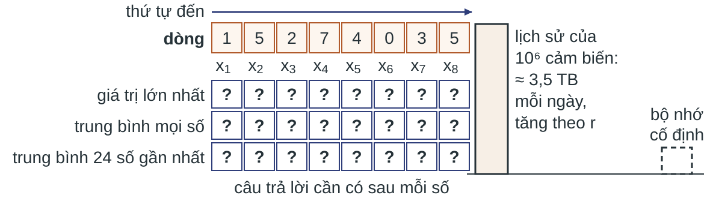
Trả lời dùng số đã qua; giữ hết một triệu dòng vượt bộ nhớ, đọc kho lưu trữ quá chậm.
Bài 02 gọi cặp này là (tổng, số lượng). Phần tử dòng không được xử lý hoặc lưu ngay thì mất (MMDS tr.131); nhịp đến do nguồn quyết định (§4.1.1). Theo §4.1.2, tr.133, một triệu cảm biến độ cao mặt biển để tìm hiểu đại dương, mỗi cảm biến 10 số 4 byte mỗi giây: $10^6\cdot10\cdot4\cdot86\,400\approx3{,}46\cdot10^{12}$ byte mỗi ngày, sách làm tròn thành 3,5 TB. Dữ liệu một ngày của một cảm biến, 3,5 MB, vừa bộ nhớ chính. Bộ nhớ làm việc không chứa được mọi dữ liệu của mọi dòng (§4.1.1, tr.132). Kho lưu trữ chỉ đọc được bằng truy xuất tốn thời gian, nên không dùng để trả lời. Ba truy vấn lấy từ Ví dụ 4.1 (tr.134), với cửa sổ 24 số. Dãy $1,5,2,7,4,0,3,5$ là dòng đầu Hình 4.1 (tr.132).
Ví dụ: trạng thái của ba truy vấn Tính trạng thái của ba truy vấn trên dòng $1,5,2,7,4,0,3,5$.
Truy vấn Trạng thái Sau 8 số giá trị lớn nhất 1 số $7$ trung bình mọi số tổng và số đếm $27/8=3{,}375$ trung bình 24 số gần nhất 24 số $27/8$ (mới có 8 số)
Trạng thái chọn theo truy vấn; hai truy vấn đầu không tăng theo $r$.
Ví dụ 08.1; ba truy vấn lấy từ Ví dụ 4.1 của MMDS (tr.134). Giá trị lớn nhất cập nhật bằng một phép so sánh với phần tử mới. Trung bình mọi số giữ tổng $27$ và số đếm $r=8$. Trung bình 24 số gần nhất phải giữ đủ 24 số, vì số rời cửa sổ phải được trừ khỏi tổng. Trạng thái của hai truy vấn đầu không tăng theo $r$; của truy vấn thứ ba bị chặn bởi 24 số.
Mô hình dòng dữ liệu Hình vẽ lại Hình 4.1 của MMDS (§4.1.1, tr.132) và giữ quy ước của sách: phần tử nằm gần bộ xử lý đến trước, nên dòng $1,5,2,7,4,0,3,5$ được viết ngược. Hệ thống không điều khiển nhịp đến, khác với hệ quản trị cơ sở dữ liệu tự quyết tốc độ đọc đĩa. Truy vấn thường trực được đăng ký trước, nằm sẵn trong bộ xử lý và cho kết quả vào thời điểm định trước; truy vấn tức thời được hỏi một lần, về trạng thái tại lúc hỏi. Trạng thái của thuật toán nằm trong bộ nhớ làm việc, có thể là bộ nhớ chính hoặc đĩa. Kho lưu trữ giữ được dòng, nhưng truy xuất quá chậm nên không dùng để trả lời; khung nét đứt biểu thị điều này. Phép cập nhật đặc tả cách trạng thái đổi khi phần tử mới đến.
Trạng thái và phép cập nhật Định nghĩa. Trạng thái là dữ liệu thuật toán giữ lại sau $r$ phần tử; phép trả lời chỉ đọc nó.
Phép cập nhật biến trạng thái sau $r-1$ phần tử và $x_r$ thành trạng thái sau $r$ phần tử.
Ví dụ. Trung bình 4 số gần nhất trên dòng $1,5,2,7,4$, khi $x_5=4$ đến.
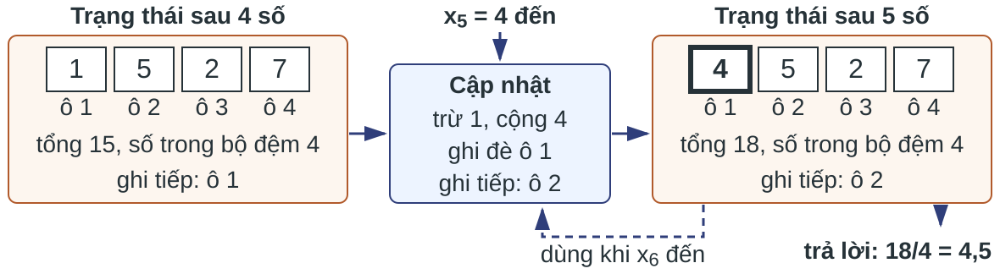
Cỡ trạng thái không tăng theo $r$.
Trạng thái gồm bộ đệm 4 ô, tổng, số các số trong bộ đệm, bằng $\min(r,4)$, và vị trí ghi tiếp. Bất biến: tổng bằng tổng các số trong bộ đệm, và khi bộ đệm đầy, ô ở vị trí ghi tiếp chứa số cũ nhất. Khi $x_5=4$ đến, số cũ nhất 1 ở ô 1 bị trừ khỏi tổng rồi bị ghi đè; tổng thành $15-1+4=18$, vị trí ghi tiếp sang ô 2, nơi số 5 nay cũ nhất, nên bất biến được giữ. Trả lời $18/4=4{,}5$, đúng trung bình của $5,2,7,4$. Phép cập nhật không đọc lại $x_1,\ldots,x_4$; thông tin cần về chúng phải nằm sẵn trong trạng thái. Bảng chi phí đếm đúng bốn phép trừ, cộng, ghi đè, tăng vị trí cho cửa sổ 24 số. Dãy là năm số đầu của dòng MMDS Hình 4.1.
Thuật toán: giá trị lớn nhất trên dòng Đầu vào: dòng số thực $x_1,x_2,\ldots$; mỗi số nằm gọn trong một từ máy (machine word).
Đầu ra: khi có truy vấn, $M=\max\{x_1,\ldots,x_r\}$.
M ← −∞
khi xᵣ đến: nếu xᵣ > M: M ← xᵣ
khi có truy vấn: trả M
$r$ 1 2 3 4 5 6 7 8 $x_r$ 1 5 2 7 4 0 3 5 $M$ 1 5 5 7 7 7 7 7
Bất biến: sau $x_r$, $M=\max\{x_1,\ldots,x_r\}$.
Thuật toán 08.2, thuật toán mẫu khi đếm chi phí. Bất biến chứng minh bằng quy nạp theo $r$: với $r=1$, $x_1>-\infty$ nên $M=x_1$; nếu bất biến đúng sau $x_r$, bước cập nhật đặt $M$ bằng số lớn hơn trong $\max\{x_1,\ldots,x_r\}$ và $x_{r+1}$, tức $\max\{x_1,\ldots,x_{r+1}\}$. Vết là Ví dụ 08.2; cùng dòng, truy vấn trung bình giữ tổng $T=1,6,8,15,19,19,22,27$ và số đếm $r$. Mỗi phần tử tốn 1 phép so sánh và tối đa 1 phép gán; bộ nhớ 1 từ. Truy vấn trước phần tử đầu tiên trả $-\infty$, nghĩa là chưa có số đo; phần tử bằng $M$ không làm đổi $M$. Sau tám phần tử, trạng thái của hai truy vấn là ba số $M=7$, $T=27$, $r=8$.
Chi phí: thuật toán dòng Mô hình: chi phí tính cho mỗi phần tử đến; bộ nhớ đếm bằng từ máy.
Truy vấn Bộ nhớ (từ) Cập nhật mỗi phần tử Lượt đọc Sai số giá trị lớn nhất 1 1 phép so sánh 1 không trung bình mọi số 2 2 phép cộng 1 không trung bình 24 số gần nhất $24+3$ 4 phép, bộ đệm vòng (ring buffer) 1 không
Sau $r$ phần tử, công việc bằng $r$ nhân số phép mỗi phần tử.
Giá trị lớn nhất (Thuật toán 08.2) giữ một số và so sánh nó với phần tử mới. Trung bình giữ tổng và số đếm; mỗi phần tử tốn hai phép cộng. Cửa sổ 24 số giữ các số trong một bộ đệm vòng, cùng tổng chạy, vị trí ghi tiếp theo và số đếm $\min(r,24)$, tổng cộng 27 từ; mỗi phần tử trừ số cũ nhất khỏi tổng khi $r>24$ (tăng số đếm khi $r\le24$), cộng số mới, ghi đè ô cũ và tăng vị trí theo modulo 24, như vết cửa sổ 4 số khi $x_5=4$ đến. Bộ đếm $r$ cần $\lceil\log_2(r+1)\rceil$ bit, vừa một từ 64 bit khi $r<2^{64}$. Ba truy vấn đều trả lời chính xác; khi trạng thái quá nhỏ để trả lời chính xác, thuật toán phải nêu đại lượng xấp xỉ và giả thiết. Nguồn: MMDS §4.1.3–4.1.4, tr.134–135.
Bài tập: trạng thái của phương sai Truy vấn thường trực trả phương sai của mọi số đã đọc:
$\sigma_r^2=\dfrac1r\sum_{i=1}^{r}(x_i-\bar x_r)^2,\qquad \bar x_r=\dfrac1r\sum_{i=1}^{r}x_i.$
Câu hỏi: trạng thái cỡ hằng nào đủ để trả lời sau mỗi phần tử?
Tính $\sigma_8^2$ trên dòng $1,5,2,7,4,0,3,5$.
Lời giải: giữ ba số $r$, $\sum x_i$ và $\sum x_i^2$; mỗi phần tử mới tăng $r$, cộng $x_r$ vào tổng và cộng $x_r^2$ vào tổng bình phương, nên cập nhật không tăng theo $r$. Khai triển bình phương cho $\sum_i(x_i-\bar x_r)^2=\sum_i x_i^2-r\bar x_r^2$, suy ra $\sigma_r^2=\frac1r\sum_i x_i^2-\bar x_r^2$. Sau 8 số: $r=8$, $\sum x_i=27$, $\sum x_i^2=1+25+4+49+16+0+9+25=129$, nên $\sigma_8^2=129/8-(27/8)^2=16{,}125-11{,}390625=4{,}734375$. Bài tập 08.1. Trong thực hành, với số thực dấu phẩy động 64 bit, công thức này trừ hai số lớn gần nhau: cộng $10^9$ vào mọi số làm hiệu bằng $0{,}0$; trạng thái Welford gồm $r$, $\bar x_r$ và $V_r=\sum_{i\le r}(x_i-\bar x_r)^2$ tránh phép trừ đó. Các truy vấn của mạch này được đặt trước khi dòng chạy; truy vấn tức thời về người dùng điển hình thì chưa biết khi phần tử đến, nên mạch sau giữ một mẫu.
3. Lấy mẫu theo khóaMuốn trả lời truy vấn tức thời về người dùng điển hình, phải giữ hoặc bỏ trọn từng người.
Sai lệch của mẫu từng bộ · Hàm băm chọn một lần · Ngăn và ngưỡng · Chọn khóa · Ngưỡng giảm dần
Mạch 2 dựng trạng thái riêng cỡ hằng cho truy vấn thường trực. Truy vấn tức thời về người dùng điển hình chưa biết khi bộ đến, nên cần mẫu $1/10$ dòng. Khó khăn: tỷ lệ lặp của một người cần nhiều bộ rải rác trong dòng, còn mỗi bộ phải được giữ hoặc bỏ khi đến. Mẫu từng bộ cắt rời các bộ đó; bảng nhãn giữ trọn từng người nhưng tăng theo số người; hàm băm chọn một lần trước dòng thay bảng. Với tỷ lệ cố định, cỡ mẫu tăng theo dòng; ngưỡng giảm dần giữ ngân sách, nhưng bỏ trọn một khóa có quá nhiều bộ. Mạch hồ chứa xử lý giới hạn này.
Mẫu cho truy vấn tức thời Nhắc lại: truy vấn thường trực như giá trị lớn nhất, phương sai có trạng thái riêng cỡ hằng.
Nhu cầu: nghiên cứu hành vi người dùng điển hình bằng truy vấn tức thời, chưa biết khi bộ đến.
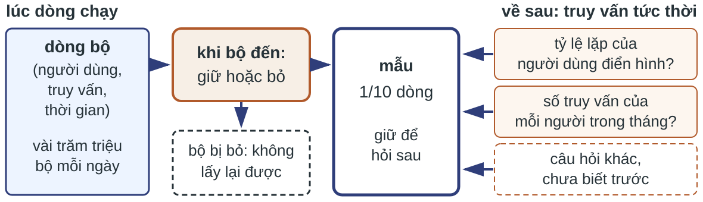
Không dựng được trạng thái riêng, không lưu được cả dòng, nên cần mẫu $1/10$ đại diện cho cả dòng.
MMDS §4.1.3, tr.134: khi không lưu cả dòng, truy vấn tức thời tùy ý không trả lời được; chỉ chuẩn bị được trạng thái cho loại câu hỏi đoán trước. §4.2.1, tr.136 đặt bài toán chung: chọn một tập con của dòng sao cho câu trả lời trên tập con đại diện về mặt thống kê cho cả dòng, kể cả với truy vấn tức thời trên mẫu. Ngân sách $1/10$ dòng cũng theo §4.2.1; quy mô vài trăm triệu truy vấn mỗi ngày theo §4.1.2, tr.133. Ngay cả tỷ lệ lặp, nếu biết trước, cũng cần đếm số lần gõ từng truy vấn của từng người, nên trạng thái tăng theo dòng. Trong hình, mỗi câu hỏi đến sau các quyết định giữ hoặc bỏ của những bộ nó dùng, nên cách chọn mẫu chỉ dựa được vào loại câu hỏi dự kiến.
Tỷ lệ truy vấn lặp trên mẫu Nhu cầu: ước lượng tỷ lệ truy vấn lặp của người dùng điển hình.
Tỷ lệ lặp: số truy vấn khác nhau gõ từ hai lần, chia cho số truy vấn khác nhau.
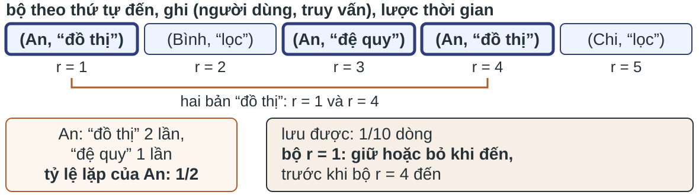
Bộ $r=1$ phải giữ hoặc bỏ ngay khi đến.
Câu hỏi: lưu $1/10$ nào vào mẫu để tỷ lệ của An vẫn là $1/2$?
MMDS §4.2.1, tr.136 hỏi tỷ lệ truy vấn lặp của người dùng điển hình (typical user): đại lượng của một người dùng bất kỳ, ước lượng bằng những người có trong mẫu. Dòng gồm các bộ (người dùng, truy vấn, thời gian); hình lược thời gian. An gõ “đồ thị” hai lần và “đệ quy” một lần, nên một trong hai truy vấn khác nhau được gõ lại. Tỷ lệ của An phụ thuộc cặp bộ ở $r=1$ và $r=4$, và lần gõ lại có thể đến bất kỳ lúc nào trong tháng; giữ tạm mọi bộ để quyết định sau là lưu cả tháng, vượt ngân sách $1/10$. Bộ đã giữ vẫn bỏ được về sau (MMDS §4.2.4, tr.138), còn bộ đã bỏ thì không lấy lại được, vì dòng chỉ đọc một lượt.
Ví dụ: ba bộ truy vấn của An Mẫu từng bộ: rút độc lập cho mỗi bộ một số đều trong $\{0,\ldots,9\}$.
Quy ước: số $0$: giữ, tức ghi bộ vào mẫu; số khác: bỏ.
Tính xác suất mẫu có hai, một hoặc không bản “đồ thị” của An.
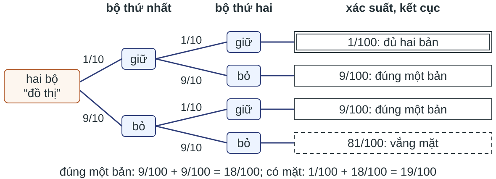
Khi “đồ thị” có mặt, xác suất chỉ một bản là $18/19$: mẫu tính nó là truy vấn gõ một lần.
Ví dụ 08.3; tình huống và cách rút số theo MMDS §4.2.1, tr.136. Bộ được giữ được ghi vào mẫu, một phần trạng thái trong bộ nhớ làm việc; dòng chỉ được đọc một lượt và kho lưu trữ không được đọc để trả lời, nên bộ bị bỏ không lấy lại được. Bốn lá ứng với hai lựa chọn giữ hoặc bỏ của mỗi bộ; số rút độc lập cho phép nhân xác suất hai nhánh. Hệ số 2 trong $18/100=2\cdot\frac1{10}\cdot\frac9{10}$ đến từ hai lá “giữ, bỏ” và “bỏ, giữ”. Khi “đồ thị” có mặt, xác suất đủ hai bản là $(1/100)/(19/100)=1/19$, chỉ một bản là $18/19$. Bộ “đệ quy” cũng vào mẫu với xác suất $1/10$.
Ví dụ: tỷ lệ lặp trên mẫu từng bộ Tính trên 100 người dùng, mỗi người ba bộ như An; mỗi bộ giữ độc lập với xác suất $1/10$.
Trường hợp trong mẫu Xác suất mỗi người Số người kỳ vọng “đồ thị” đủ hai bản $1/100$ $1$ “đồ thị” chỉ một bản $18/100$ $18$ “đệ quy” có mặt $1/10$ $10$
Tỷ số hai số đếm kỳ vọng, thấy lặp trên có mặt: $1/(1+18+10)=1/29$; trong dòng: $100/200=1/2$.
Giả sử 100 người có cùng lịch sử như An. Theo tuyến tính kỳ vọng, số người ở mỗi hàng bằng 100 nhân xác suất. Tử số đếm truy vấn thấy hai lần trong mẫu; mẫu số đếm mọi truy vấn có mặt, $1+18+10=29$. Cứ một lần thấy “đồ thị” lặp thì có 18 lần thấy nó chỉ một bản. Số $1/29$ nhỏ hơn $1/19$ vì mẫu số có thêm 10 lần “đệ quy”. Khi số người như An lớn, theo luật số lớn, tỷ lệ gộp trên mẫu tiến về $1/29$; đó là nghĩa của tỷ số hai số đếm kỳ vọng, không phải kỳ vọng của tỷ lệ tính trên mẫu của một người. Trong dòng, 100 truy vấn lặp trên 200 truy vấn khác nhau.
Sai lệch của mẫu từng bộ Người dùng gõ $u$ truy vấn một lần, $d>0$ truy vấn hai lần, không truy vấn nào hơn hai lần.
Loại Trong dòng Kỳ vọng còn hai bản Kỳ vọng còn một bản một lần $u$ $0$ $u/10$ hai lần $d$ $d/100$ $18d/100$
$\dfrac{d/100}{u/10+d/100+18d/100}=\dfrac{d}{10u+19d}\ne\dfrac{d}{u+d}$
Tử số: truy vấn thấy hai lần; mẫu số: truy vấn có mặt; tỷ lệ thật $d/(u+d)$; $u=d=1$ cho $1/29$.
Mệnh đề 08.6; bảng đếm theo MMDS §4.2.1, tr.136–137, khi mỗi bộ được giữ độc lập với xác suất $1/10$: truy vấn một lần được giữ với xác suất $1/10$; truy vấn hai lần còn đủ hai bản với xác suất $1/100$ và còn đúng một bản với xác suất $18/100$; nhân với $u$, $d$ theo tuyến tính kỳ vọng. Hai vế bằng nhau khi và chỉ khi $9u+18d=0$, không xảy ra với $u\ge0$, $d>0$. Nguyên nhân: hai bản của cùng một truy vấn nhận hai quyết định riêng. Với tỷ lệ giữ $\eta$ thay cho $1/10$, cùng phép đếm cho $\frac{\eta d}{u+(2-\eta)d}$; kiểm với $\eta=1$, tức giữ mọi bộ, được đúng $\frac{d}{u+d}$. MMDS viết $s$ cho số truy vấn một lần; ở đây dùng $u$ vì $s$ là sức chứa hồ chứa.
Bảng giữ hoặc bỏ theo người dùng Mẫu từng bộ quyết định riêng hai bản “đồ thị”: $1/29$ thay vì $1/2$.
Tương tự, nhưng rút một số cho mỗi người dùng, không cho mỗi bộ.
Gặp một người lần đầu: số $0$ ghi “giữ”, số khác ghi “bỏ”; bộ sau tra bảng.
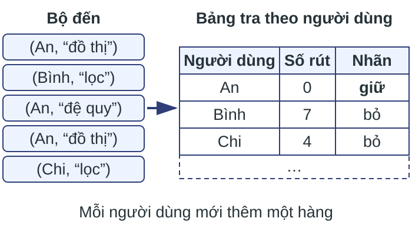
Diễn giải: An “giữ” nên mẫu có đủ ba bộ của An, tỷ lệ lặp $1/2$.
MMDS §4.2.2, tr.137 nêu phương án này: chọn $1/10$ số người dùng và lấy mọi truy vấn của họ. Đơn vị rút đổi từ bộ sang người dùng, nên ba bộ của An tra cùng một hàng và nhận cùng nhãn; mỗi người được giữ với xác suất $1/10$. Câu hỏi cho lớp: bảng tăng theo đại lượng nào? Lời giải: theo số người dùng phân biệt đã gặp, tối đa $r$; một người có $10^6$ bộ vẫn chỉ chiếm một hàng; khi số người không bị chặn, bảng vượt mọi bộ nhớ làm việc cố định. Bảng nhãn trên năm bộ là Ví dụ 08.4.
Hàm băm thay bảng nhãn Nhu cầu: mọi bộ của một người nhận cùng quyết định, không lưu nhãn theo người.
Bảng nhãn tăng theo số người dùng, tra ở mỗi bộ: $10^8$ người cần 1,6 GB.
Tương tự phép băm khóa ở Bài 02, $h$ trên tên người dùng thay bảng: cùng tên luôn cho cùng giá trị.
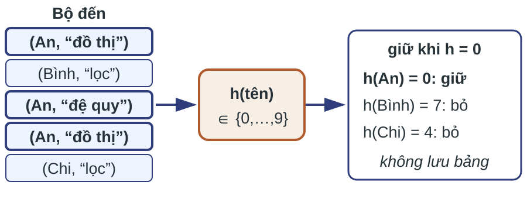
Mẫu từng bộ không nhớ gì theo người nhưng cắt rời các bộ cùng người; bảng nhãn giữ trọn từng người nhưng nhớ một nhãn cho mỗi người. Bài 02 băm khóa để mọi cặp cùng khóa đến cùng một tác vụ Reduce. Giả sử có $10^8$ người dùng, mỗi hàng 16 byte: $10^8\cdot16=1{,}6\cdot10^9$ byte. Đưa bảng ra đĩa cũng không được, vì không có thời gian ra đĩa cho mỗi bộ đến (MMDS §4.2.2, tr.137). Sách gọi hàm băm là bộ sinh số ngẫu nhiên luôn cho cùng số với cùng người dùng. Giá trị $h(\text{An})=0$, $h(\text{Bình})=7$, $h(\text{Chi})=4$ trùng số rút của bảng nên hai phương án cho cùng mẫu. Mẫu cũng tăng theo dòng nhưng nằm trong ngân sách $1/10$ dòng (MMDS §4.2.1); bảng là trạng thái thêm ngoài ngân sách đó.
Ví dụ: chọn hàm băm trước dòng Nhu cầu: $h(\text{An})=0$ là số cố định; xác suất $1/10$ nằm ở lần chọn $h$.
Rút $\omega\in\{0,\ldots,9\}$ đều, một lần trước dòng; $h_\omega(\text{tên})=(\text{mã}+\omega)\bmod 10$, giữ khi $h=0$. Tính $h_\omega$ theo mã.
Người (mã) / $\omega$ $0$ $1$ $2$ $\mathbf{3}$ $4$ $5$ $6$ $7$ $8$ $9$ An (7) 7 8 9 0 1 2 3 4 5 6 Bình (4) 4 5 6 7 8 9 0 1 2 3 Chi (1) 1 2 3 4 5 6 7 8 9 0
Mỗi hàng có đúng một số $0$: xác suất $1/10$. Chọn $\omega=3$: cả ba bộ của An có $h=0$, đều được giữ.
Mỗi cột là một hàm có thể chọn. Rút $\omega$ là rút trước một lần cho mọi người cùng lúc; sau đó $h$ cố định, nên mọi bộ của một người cho cùng giá trị. Xác suất $1/10$ tính theo phép rút $\omega$, như xác suất theo phép chọn hàm ở Bài 06, không theo các bộ đến. Mỗi hàng là một hoán vị của $0,\ldots,9$, nên giá trị băm của mỗi người đều trên mười ngăn. Họ này không cho các người dùng độc lập với nhau: hai người có mã cùng số dư khi chia 10 luôn cùng được giữ hoặc cùng bị bỏ. Trong thực hành, $\omega$ là hạt giống của hàm băm. Mã là số hiệu người dùng: An 7, Bình 4, Chi 1; với $\omega=3$, $h$ cho 0, 7, 4 như hình băm theo người dùng.
Khóa, ngăn và ngưỡng Định nghĩa. Khóa $K(t)$ là một hoặc vài thành phần của bộ $t$ mà quyết định giữ hoặc bỏ dựa vào.
$h$ đưa mỗi khóa, ở đây là người dùng, vào một trong $b$ ngăn $0,\ldots,b-1$; ngăn không chứa dữ liệu, khác thùng Bài 06.
Giữ bộ $t$ khi $h(K(t))<a$; số $a$ gọi là ngưỡng, nhận $a$ trong $b$ ngăn.
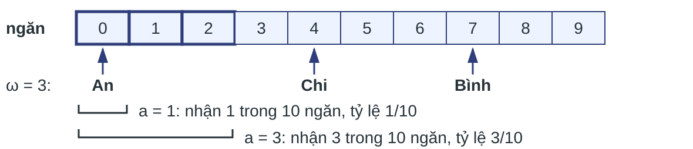
Ví dụ. $a=3$: $h_\omega(\text{An})=(7+\omega)\bmod10<3$ khi $\omega\in\{3,4,5\}$, xác suất $3/10$.
Định nghĩa 08.8. MMDS §4.2.2, tr.137 băm tên người dùng vào mười ngăn 0 đến 9 và nói rõ ngăn không chứa dữ liệu; ngăn chỉ là một giá trị của $h$. Thùng ở Bài 06 thì chứa tài liệu ứng viên. Tổng quát theo sách: tỷ lệ $a/b$ có được khi băm vào $b$ ngăn và nhận bộ có giá trị băm nhỏ hơn $a$; dấu nhỏ hơn cho đúng $a$ giá trị $0,\ldots,a-1$. Tỷ lệ 30% theo slide MMDS Streams 1 tr.15–16; tình huống mở bài dùng $b=10$, $a=1$. Ví dụ kiểm $a/b$ trên họ $h_\omega$: ba trong mười giá trị của $\omega$ đưa An vào ngăn 0, 1 hoặc 2. Khóa gồm vài thành phần khi đơn vị thống kê cần, chẳng hạn cặp (người dùng, truy vấn).
Thuật toán: lấy mẫu theo khóa Đầu vào: bộ $t$ có khóa $K(t)$; số ngăn $b\ge1$, ngưỡng $0\le a\le b$; hàm $h$ từ khóa vào $\{0,\ldots,b-1\}$.
Giả thiết: với mỗi khóa $K$, $h(K)$ đều trên $\{0,\ldots,b-1\}$ theo cách chọn $h$; $h$ cố định suốt dòng.
Đầu ra: mẫu gồm đúng các bộ $t$ có $h(K(t))<a$.
LẤY-MẪU-THEO-KHÓA(t; a, h)
nếu h(K(t)) < a:
đưa t vào mẫu
Phép quyết định là so sánh $h(K(t))$ với $a$, không lưu gì theo khóa; xác suất $a/b$ đến từ lần rút $h$ trước dòng.
Ví dụ An ứng với $b=10$ ngăn, ngưỡng $a=1$, tức giữ khi $h=0$. Đặc tả theo MMDS §4.2.2–4.2.3, tr.137–138: tỷ lệ $a/b$ của khóa có được bằng cách băm khóa vào $b$ ngăn và nhận bộ khi giá trị băm nhỏ hơn $a$. Thuật toán 08.9. Dấu nhỏ hơn cho đúng $a$ giá trị $0,\ldots,a-1$. Biên: $a=0$ cho mẫu rỗng, $a=b$ giữ mọi bộ. Nếu $h$ chỉ gần đều thì tỷ lệ $a/b$ không còn được bảo đảm. Khi khóa gồm nhiều thành phần, $h$ kết hợp các thành phần thành một giá trị.
Thuật toán: lấy mẫu theo khóa, vết trên năm bộ $r$ Bộ $t$ $h(K(t))$ $h(K(t))<5$ Mẫu sau bước 1 (An, “đồ thị”) 0 giữ 1 bộ 2 (Bình, “lọc”) 7 bỏ 1 bộ 3 (An, “đệ quy”) 0 giữ 2 bộ 4 (An, “đồ thị”) 0 giữ 3 bộ 5 (Chi, “lọc”) 4 giữ 4 bộ
Trên mẫu: An có tỷ lệ lặp $1/2$, Chi có $0$, đúng tỷ lệ thật; Bình vắng trọn.
Ý nghĩa: mỗi người vào mẫu với cùng xác suất $a/b$ và mang đủ mọi bộ.
Ví dụ 08.5 với dòng năm bộ, $b=10$: vết dùng $h_\omega$ với $\omega=3$, nên $h(\text{An})=0$, $h(\text{Bình})=7$, $h(\text{Chi})=4$, và ngưỡng $a=5$, tức nhận các ngăn $0,\ldots,4$; $a=5$ được chọn để ngưỡng nhận cả Chi, khác $a=1$ của hình băm. Theo phép rút $\omega$, mỗi người được giữ với xác suất $5/10$; lần chạy này giữ hai trong ba người, vì số người được giữ là ngẫu nhiên. Tổng theo người tính trên mẫu chia cho $a/b$ có kỳ vọng bằng tổng thật, và Bình vắng trọn không làm sai tỷ lệ của người được giữ. Để từng lần chạy đại diện cho người dùng điển hình khi số khóa lớn, đủ nếu thêm giả thiết các khóa nhận giá trị băm độc lập từng cặp; họ $h_\omega$ không có tính chất đó. Cùng dòng, mẫu từng bộ cho An tỷ số kỳ vọng $1/29$.
Tính đúng: lấy mẫu theo khóa Mệnh đề. Cho $h$ cố định suốt dòng (Mệnh đề 08.10).
(a) Mọi bộ cùng khóa cùng được giữ hoặc cùng bị bỏ.
(b) Nếu $h(K)$ đều trên $\{0,\ldots,b-1\}$ theo cách chọn $h$, khóa $K$ được giữ với xác suất $a/b$.
Chứng minh. (a) $K(t)=K(t')$ nên $h(K(t))=h(K(t'))$; hai phép so sánh với $a$ cho cùng kết quả.
(b) Đúng $a$ trong $b$ giá trị đồng khả năng nhỏ hơn $a$.
Phần (a) đúng với mọi $h$ cố định, kể cả hàm không đều, và thay bảng nhãn: mẫu chứa đủ ba bộ của An và cho $1/2$. Phần (b) là xác suất theo phép rút $h$, như rút $\omega$ trong họ $h_\omega$; sau khi rút, mỗi khóa chắc chắn được giữ hoặc chắc chắn bị bỏ. Mỗi người vào mẫu với cùng xác suất $a/b$ và mang đủ mọi bộ, nên tổng theo người tính trên mẫu chia cho $a/b$ có kỳ vọng bằng tổng thật. Phản ví dụ: rút lại $\omega$ giữa dòng thì ba bộ của An có thể nhận hai quyết định và bị cắt như mẫu từng bộ; hàm luôn trả $0$ vẫn nhất quán nhưng, với $1\le a<b$, giữ mọi khóa với xác suất 1. Số khóa được giữ là ngẫu nhiên. Nguồn: MMDS §4.2.2–4.2.3, tr.137–138.
Chọn khóa lấy mẫu Khóa nhận diện đơn vị mà thống kê gộp: tỷ lệ lặp gộp các bộ theo từng người dùng.
Thống kê Khóa tỷ lệ lặp của người dùng điển hình người dùng số người gõ mỗi truy vấn truy vấn số lần một người gõ lại một truy vấn (người dùng, truy vấn)
Câu hỏi: khóa (người dùng, thời gian) có cho đúng tỷ lệ lặp của người dùng điển hình không?
Lời giải: không. Các bộ của cùng một người dùng có thời gian khác nhau nên có khóa khác nhau, và Mệnh đề 08.10(a) không ràng buộc quyết định của chúng. Nếu thêm giả thiết các khóa khác nhau nhận giá trị băm độc lập theo cách chọn $h$, mỗi bộ được giữ độc lập với xác suất $1/10$, đúng là mẫu từng bộ, với sai lệch $d/(10u+19d)$. Bài tập 08.2. Khóa phải nhận diện đúng đơn vị mà thống kê gộp; với khóa truy vấn, hai bộ “lọc” của Bình và Chi cùng vào hoặc cùng ra. Thêm thành phần như thời gian tách một đơn vị thành nhiều khóa; bớt thành phần gộp nhiều đơn vị vào một khóa. Ba khóa của bảng theo MMDS §4.2.3, tr.137.
Chi phí: lấy mẫu theo khóa Mô hình: đếm phép toán mỗi bộ đến; bộ nhớ đếm bằng từ máy.
Thành phần Mỗi bộ Sau $r$ bộ băm khóa 1 phép $r$ phép so sánh với $a$ 1 phép $r$ phép hạt giống $\omega$ của $h$; $a$, $b$ — cỡ hằng mẫu đã lưu 0 hoặc 1 bộ kỳ vọng $ar/b$ bộ
Trạng thái quyết định cỡ hằng; mẫu tăng theo dòng (Hệ quả 08.12): $r=10^9$, $a/b=1/10$ cho kỳ vọng $10^8$ bộ.
Mỗi bộ tốn một phép băm khóa và một phép so sánh; trạng thái quyết định chỉ gồm hạt giống $\omega$ của $h$ và hai số $a$, $b$, không tăng theo $r$ hay số khóa. Một họ hàm băm độc lập từng cặp cũng chỉ cần lưu vài hệ số, tức $O(1)$ từ; một hàm hoàn toàn ngẫu nhiên phải lưu giá trị của mọi khóa, nên không có cỡ hằng. Mẫu là phần trạng thái tăng theo dòng, trong ngân sách $1/10$ dòng của bài toán; nó có kỳ vọng $ar/b$ bộ vì mỗi bộ được giữ với xác suất $a/b$ và kỳ vọng cộng được không cần độc lập; một khóa nhiều bộ làm cỡ thực lệch xa kỳ vọng. Giả sử dòng có $r=10^9$ bộ. Với ngân sách cố định cho số bộ, tỷ lệ khóa phải giảm dần (MMDS §4.2.4, tr.138).
Ngưỡng băm và khóa nhiều bộ Câu hỏi: với $h$ nhận giá trị trong $\{0,\ldots,99\}$, để chọn 20% khóa, giữ khi $h(K)\le20$ hay khi $h(K)<20$?
Một khóa có $10^6$ bộ. Mẫu bảo đảm gì về các bộ đó, và có bảo đảm 20% số bộ không?
Lời giải: $h(K)<20$ cho đúng 20 giá trị $0,\ldots,19$, tức tỷ lệ $20/100$; $h(K)\le20$ cho 21 giá trị, tức 21%. Khóa có $10^6$ bộ được giữ trọn hoặc bỏ trọn; nếu được giữ, nó đóng góp $10^6$ bộ vào mẫu. Mẫu không bảo đảm 20% số bộ: tỷ lệ $a/b$ áp dụng cho khóa, không cho bộ, nên một khóa nhiều bộ làm tỷ lệ số bộ trong mẫu lệch xa 20%. Bài tập 08.3; Ví dụ 08.6: một khóa $10^6$ bộ cùng $1\,000$ khóa một bộ, $a/b=1/5$, cho cỡ mẫu kỳ vọng $200\,200$ nhưng cỡ thực hoặc ít nhất $10^6$, hoặc không quá $1\,000$. Nguồn: MMDS §4.2.3, tr.137–138.
Ví dụ: hạ ngưỡng trên năm bộ Tương tự lấy mẫu theo khóa với $a=\tau+1$; khác ở chỗ $\tau$ hạ khi mẫu vượt ngân sách $G$ bộ.
Tính mẫu và $\tau$ sau từng bộ: dòng năm bộ, $b=10$, $G=3$, ban đầu $\tau=9$.
$r$ Khóa $h$ Thao tác Mẫu sau bước $\tau$ 1 An 0 nhận An 9 2 Bình 7 nhận An, Bình 9 3 An 0 nhận An, Bình, An 9 4 An 0 nhận; 4 bộ $>G$: xóa $c=7$ An, An, An 6 5 Chi 4 $4\le6$: nhận; 4 bộ $>G$: xóa $c=4$ An, An, An 3
Ví dụ 08.7. Với tỷ lệ cố định, mẫu giữ mọi truy vấn của người được chọn mãi mãi và người mới được chọn tiếp tục xuất hiện (MMDS §4.2.4, tr.138). Ta giữ ngưỡng $\tau$, nhận bộ khi $h(K(t))\le\tau$, tức ngưỡng $a=\tau+1$; khi mẫu có hơn $G$ bộ, xóa mọi bộ mang giá trị băm lớn nhất $c$ trong mẫu và đặt $\tau\gets c-1$. Hạ ngưỡng chỉ bỏ khóa, không thêm khóa (Ví dụ 08.5), nên các bộ cùng khóa vẫn cùng quyết định. Sau bước 5, mẫu là mẫu theo khóa với $a=\tau+1=4$: giữ trọn An, bỏ trọn Bình và Chi. Ở bước 4, ngưỡng nhảy từ 9 xuống 6, qua các giá trị 9 và 8 không có bộ nào. Kiểm tra lại: các bộ đã đọc có $h\le3$ là ba bộ của An, và mẫu có 3 bộ, bằng $G$.
Thuật toán: lấy mẫu theo khóa với ngưỡng giảm dần Đầu vào: dòng bộ $t$; $h$ cố định vào $\{0,\ldots,b-1\}$; ngân sách $G$ bộ.
Đầu ra: sau mỗi bộ, mẫu gồm các bộ đã đọc có $h(K(t))\le\tau$, không quá $G$ bộ.
τ ← b − 1; mẫu rỗng
khi bộ t đến:
nếu h(K(t)) ≤ τ: đưa t vào mẫu
chừng nào mẫu có hơn G bộ:
c ← giá trị băm lớn nhất trong mẫu
xóa mọi bộ có giá trị băm c
τ ← c − 1
Quyết định: so sánh với $\tau$; bước dọn bỏ trọn một giá trị băm.
Trường hợp biên: khóa có hơn $G$ bộ bị bỏ trọn.
Mỗi lần chèn hoặc dọn thêm $O(\log G)$ trên chỉ mục có thứ tự.
Thuật toán 08.13. Mỗi bộ tốn 1 phép băm và 1 phép so sánh, như Thuật toán 08.9. Bước dọn cần giá trị băm lớn nhất trong mẫu, nên mẫu có chỉ mục có thứ tự theo giá trị băm, chẳng hạn cây tìm kiếm cân bằng mà mỗi nút giữ danh sách các bộ cùng giá trị; chỉ mục giữ không quá $G+1$ bộ, nên mỗi lần tra hoặc chèn tốn $O(\log G)$. Mỗi bộ bị xóa nhiều nhất một lần, nên tổng số phép xóa không quá $r$. Mỗi lần lặp của bước dọn xóa ít nhất một bộ, nên bước dọn dừng. Ở Ví dụ 08.6, khóa $10^6$ bộ với ngân sách $G<10^6$ buộc $\tau$ xuống dưới giá trị băm của nó, nên mỗi bộ của khóa đó có xác suất có mặt bằng 0.
Tính đúng: ngưỡng giảm dần Mệnh đề. Với $h$ cố định, sau mỗi bước, mẫu gồm đúng các bộ đã đọc có $h(K(t))\le\tau$; $\tau$ không tăng (Mệnh đề 08.14).
Chứng minh. Quy nạp; bước đưa vào nhận $t$ đúng khi $h(K(t))\le\tau$.
Bước dọn: $c$ lớn nhất trong mẫu; theo giả thiết quy nạp, không bộ đã đọc nào có $h\in(c,\tau]$.
Xóa các bộ mang $c$ rồi đặt $\tau\gets c-1$: bất biến được giữ và $\tau$ giảm.
Mệnh đề 08.14. Khởi tạo: trước bộ đầu tiên, mẫu rỗng và chưa có bộ nào được đọc. Đưa vào: nếu bất biến đúng trước khi $t$ đến, bước này thêm $t$ đúng khi $h(K(t))\le\tau$. Hạ ngưỡng: giả sử mẫu bằng tập các bộ đã đọc có $h\le\tau$ và khác rỗng; $c\le\tau$ là giá trị lớn nhất trong mẫu, nên không bộ nào trong mẫu, và theo bất biến không bộ đã đọc nào, có giá trị trong $(c,\tau]$. Xóa các bộ mang $c$ để lại đúng các bộ đã đọc có $h\le c-1$. Do đó mẫu luôn là mẫu theo khóa với ngưỡng $a=\tau+1$, và tỷ lệ khóa $(\tau+1)/b$ giảm dần theo dòng. Ngưỡng cuối phụ thuộc giá trị băm và số bộ của các khóa, nên xác suất $a/b$ của Mệnh đề 08.10(b) không áp dụng trực tiếp cho ngưỡng cuối (Tình huống 08.1).
4. Lấy mẫu hồ chứaMuốn mỗi phần tử đã đọc cùng xác suất có mặt trong mẫu cỡ cố định, phải thay ngẫu nhiên theo vị trí.
Mẫu cỡ cố định · Ba cách trực tiếp · Vết hai ô · Bất biến quy nạp · So với mẫu theo khóa
Mẫu theo khóa giữ trọn từng khóa nhưng cỡ mẫu có kỳ vọng $ar/b$, tăng theo dòng. Ngưỡng giảm dần giữ không quá $G$ bộ, nhưng với $G<10^6$, mỗi bộ của khóa $10^6$ bộ có xác suất có mặt 0. Nhiệm vụ: giữ đúng $s$ phần tử sao cho ở mọi $r\ge s$, mỗi phần tử đã đọc có xác suất $s/r$. Lưu cả dòng, giữ $s$ phần tử đầu hay giữ mỗi phần tử với xác suất cố định đều vi phạm yêu cầu này. Hồ chứa rút một số đều mỗi bước; quy nạp theo $r$ cho $s/r$. Câu hỏi thành viên thuộc mạch Bloom filter.
Mẫu cỡ cố định Nhắc lại: ngưỡng giảm dần giữ $\le G$ bộ; với $G<10^6$, mỗi bộ của khóa $10^6$ bộ có xác suất có mặt 0.
Nhu cầu: mẫu đúng $s$ phần tử ở mọi thời điểm, mỗi phần tử đã đọc cùng cơ hội có mặt.
Định nghĩa. Mẫu hồ chứa cỡ $s$: sau $r\ge s$ phần tử, $W$ có đúng $s$ phần tử đã đọc và $\Pr[x_i\in W]=s/r$.
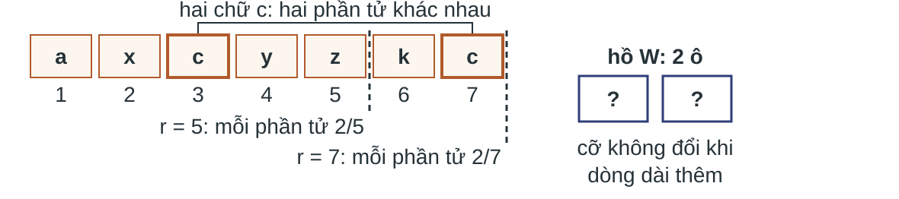
Với tỷ lệ cố định, mẫu theo khóa có cỡ kỳ vọng $ar/b$ và giữ mọi truy vấn của người dùng được chọn mãi mãi (MMDS §4.2.4, tr.138): vài trăm triệu truy vấn mỗi ngày (§4.1.2, tr.133) nhân $1/10$ cho vài chục triệu bộ mỗi ngày. Ngưỡng giảm dần chặn cỡ mẫu ở $G$, nhưng với $G<10^6$ nó bỏ trọn khóa $10^6$ bộ của Ví dụ 08.6, nên mỗi bộ của khóa đó có xác suất có mặt bằng 0. Phương pháp AMS ước lượng mômen (Bài 09) cần đúng $s$ vị trí ở mọi thời điểm, mỗi vị trí đã đọc cùng xác suất được chọn (MMDS §4.5.5, tr.148–149). Tổng các xác suất có mặt bằng số phần tử trong mẫu, tức $s$, nên xác suất chung là $s/r$ (Định nghĩa 08.15). Hình: $s=2$; hai chữ c ở vị trí 3 và 7 là hai phần tử.
Ví dụ: ba cách giữ mẫu hai ô Dòng a, x, c, y, z, k, c, $s=2$. Tính xác suất có mặt ở mỗi cách; $N$: số phần tử giữ.
$r=5$, cần $2/5$ $r=7$, cần $2/7$ lưu cả dòng, rút sau đúng; 5 ô đúng; 7 ô giữ 2 phần tử đầu sai; a, x: 1; còn lại: 0 sai; a, x: 1; còn lại: 0 giữ từng phần tử với xác suất $2/5$ đúng $2/5$; $\Pr[N\ne2]\approx0{,}65$ sai; $\Pr[N\ne2]\approx0{,}74$
Mục tiêu $s/r$ giảm ở mọi $r$; phần tử đã giữ phải có lúc bị bỏ.
Dòng và cách thứ nhất, lời giải «không thực tế», theo slide MMDS Streams 1 tr.18. Cách thứ hai là một dạng của cách chọn vị trí một lần cho mãi mãi; theo MMDS §4.5.5, tr.148, cách đó thiên về vị trí đầu và làm ước lượng mômen quá lớn. Ví dụ 08.8. Cách thứ ba giữ mỗi phần tử độc lập với xác suất $\eta=2/5$, đúng ở $r=5$, như mẫu từng bộ của mạch 3; $N$ có phân phối nhị thức. Ở $r=5$: $\Pr[N=2]=0{,}3456$, $\Pr[N>2]=0{,}31744$, $\Pr[N<2]=0{,}33696$. Ở $r=7$: $\Pr[N>2]=0{,}580096$, kỳ vọng $2{,}8$. MMDS còn nêu cách chờ lâu mới chọn: đầu dòng có ít biến nên ước lượng không tin cậy (tr.148–149). Rút trước $s$ vị trí cần biết trước độ dài dòng. Mục tiêu đạt ở mọi $r$ với $s$ ô và bộ đếm $r$; phần tử đã bỏ không lấy lại được.
Ý tưởng lấy mẫu hồ chứa Tương tự mẫu theo khóa, giữ khi một số đều không vượt ngưỡng: $j\le s$ thay cho $h(K)<a$.
Khác ở chỗ $j$ rút lại ở mỗi vị trí, và phần tử đã giữ có thể bị thay.
Với $r\le s$, đặt $x_r$ vào ô $r$; với $r>s$, rút $j$ đều trong $\{1,\ldots,r\}$ và thay ô $j$ khi $j\le s$.
Trực quan. $x_r$ vào hồ với xác suất $s/r$; ô bị thay chọn đều trong $s$ ô.
Việc thay phần tử đã giữ đáp ứng yêu cầu bỏ dần khi $s/r$ giảm. Rút $j$ đều trong $\{1,\ldots,r\}$ gộp hai quyết định của MMDS §4.5.5, tr.149 và slide Streams 1 tr.19: nhận $x_r$ với xác suất $s/r$, vì đúng $s$ trong $r$ giá trị thỏa $j\le s$; rồi chọn ô bị thay đều trong $s$ ô, vì điều kiện trên $j\le s$, $j$ đều trên $\{1,\ldots,s\}$. Mẫu theo khóa băm khóa nên mỗi khóa có một quyết định cố định; hồ chứa rút số mới ở mỗi vị trí, nên hai bộ của cùng một người có thể bị tách. Số rút phải đều và độc lập với các lần rút trước và với nội dung $W$.
Ví dụ: vết chạy hồ chứa hai ô Tính hồ chứa sau $r=5$: dòng a, x, c, y, z; $s=2$; các số rút $j=2,4,1$ ở $r=3,4,5$.
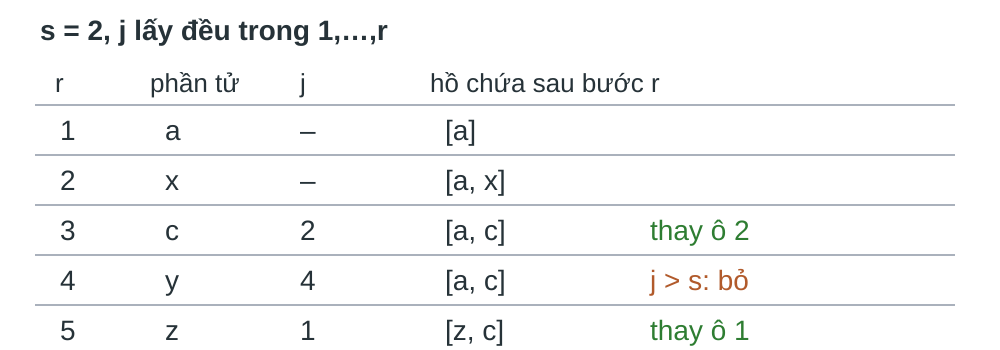
Sau $r=5$, hồ chứa là [z, c]; phần tử x và y không còn.
Ở $r=3$, $j=2\le s$ nên c thay ô 2. Ở $r=4$, $j=4>s$ nên bỏ y. Ở $r=5$, $j=1$ nên z thay ô 1. Ví dụ 08.9; dãy a, x, c, y, z lấy từ slide MMDS Streams 1 tr.18. Theo quy tắc, c được nhận với xác suất $2/3$, y với $2/4$, z với $2/5$; lần rút này nhận c và z, bỏ y. [z, c] là một kết cục; ở lần rút khác hồ có thể chứa cặp khác, và sau $r=5$ mỗi phần tử có cùng xác suất $2/5$.
Thuật toán: lấy mẫu hồ chứa Đầu vào: dòng $x_1,x_2,\ldots$; số nguyên $s\ge1$; số rút đều, độc lập với các lần rút trước và $W$.
Đầu ra: sau $r$ phần tử, mảng $W$ chứa $\min(r,s)$ phần tử đã đọc.
HỒ-CHỨA(x₁, x₂, …; s)
r ← 0
với mỗi phần tử x đến:
r ← r + 1
nếu r ≤ s: W[r] ← x
ngược lại:
j ← số nguyên đều trong {1,…,r}
nếu j ≤ s: W[j] ← x
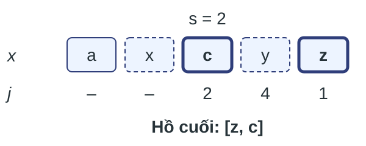
Trường hợp biên: $s=1$ giữ một phần tử, nhận $x_r$ với xác suất $1/r$.
Một số $j$ vừa quyết định nhận ($j\le s$) vừa chọn ô bị thay.
Thuật toán 08.16; đặc tả theo MMDS §4.5.5, tr.149 và slide Streams 1 tr.19: lưu $s$ phần tử đầu, rồi với phần tử thứ $r>s$, nhận với xác suất $s/r$ và thay một ô chọn đều. Giả mã tự đếm $r$, khởi tạo $r=0$ và mảng rỗng. Điều kiện $j\le s$ đúng với $s$ trong $r$ giá trị nên xác suất nhận là $s/r$; điều kiện trên việc nhận, $j$ đều trên $\{1,\ldots,s\}$ nên ô bị thay chọn đều. Biên: khi $r\le s$, hồ chứa cả $r$ phần tử đã đọc. MMDS §4.5.5 dùng cơ chế này để chọn vị trí các biến của phương pháp AMS (Bài 09); với $s=1$, mỗi vị trí được chọn với xác suất $1/r$. Hình nhỏ nhắc lại vết hai ô với hồ cuối [z, c].
Tính đúng: lấy mẫu hồ chứa Định lý. Nếu mỗi $j$ đều trên $\{1,\ldots,r\}$, độc lập với các lần rút trước, thì sau $r\ge s$ phần tử: $|W|=s$ và $\Pr[x_i\in W]=s/r$, $i\le r$ (Định lý 08.17).
Chứng minh. Quy nạp theo $r$.
Cơ sở $r=s$: cả $s$ phần tử đầu nằm trong $W$, xác suất $1=s/s$.
Bước $r\to r+1$: giả thiết quy nạp $\Pr[x_i\in W]=s/r$ với mọi $i\le r$; xét phần tử mới, rồi phần tử cũ.
Cỡ $s$: mỗi bước $r>s$ giữ nguyên $W$ hoặc thay một ô.
Định lý và cơ sở theo MMDS §4.5.5, tr.149 và slide Streams 1 tr.19–20; sách và slide viết $n$ cho $r$. Xác suất lấy theo các lần rút $j$ và nói về từng phần tử riêng lẻ; các biến cố $x_i\in W$ không độc lập, vì tổng số phần tử có mặt luôn bằng $s$. Giả thiết quy nạp được dùng cùng lúc cho mọi phần tử cũ. Tính độc lập của $j$ với các lần rút trước, và vì thế với nội dung $W$, là điều kiện để nhân xác suất ở bước phần tử cũ; nếu bộ sinh phụ thuộc nội dung $W$, phép nhân sai. Mạnh hơn, mọi tập $s$ vị trí trong $r$ vị trí có cùng xác suất $1/\binom rs$ (Mệnh đề 08.18).
Chứng minh: xác suất có mặt, phần tử mới Ở bước $r+1$, $j$ đều trên $\{1,\ldots,r+1\}$; $x_{r+1}$ vào $W$ khi $j\le s$.
$\Pr[x_{r+1}\in W]=\dfrac{s}{r+1}.$
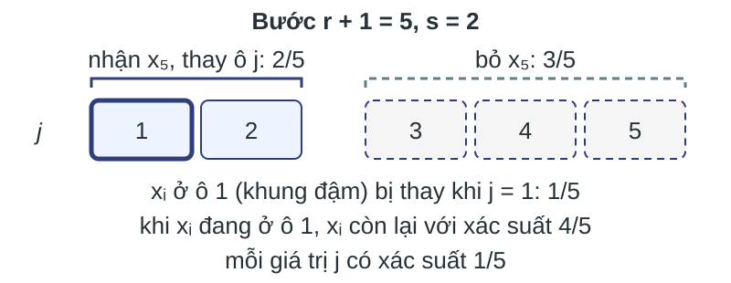
Ví dụ. $s=2$: $x_5$ được nhận với xác suất $2/5$; ở vết hai ô, lần rút $j=1$ là một trường hợp nhận.
Có đúng $s$ trong $r+1$ giá trị đồng khả năng thỏa $j\le s$, nên $x_{r+1}$ được nhận với xác suất $s/(r+1)$. Đây là nửa thứ nhất của bước quy nạp và không cần giả thiết quy nạp: phần tử mới chỉ phụ thuộc lần rút hiện tại. Trong hình, $j=1,2$ nhận $x_5$ và $j=3,4,5$ bỏ $x_5$. Nguồn: slide MMDS Streams 1 tr.20–21.
Chứng minh: xác suất có mặt, phần tử cũ Xét $x_i$, $i\le r$; giả thiết quy nạp: $\Pr[x_i\in W\text{ sau bước }r]=s/r$.
Khi $x_i\in W$, nó bị thay đúng khi $j$ bằng ô chứa nó, một trong $r+1$ giá trị.
Do $j$ độc lập với các lần rút trước:
$\Pr[x_i\in W\text{ sau bước }r+1]=\dfrac{s}{r}\Bigl(1-\dfrac{1}{r+1}\Bigr)=\dfrac{s}{r+1}.$
Ví dụ. $s=2$, $r=4$: $\frac24\cdot\frac45=\frac25$.
Lưu ý: $s/(r+1)$ là xác suất nhận $x_{r+1}$; khi $x_i\in W$, $1/(r+1)$ là xác suất $j$ trúng ô của $x_i$.
Giả thiết quy nạp áp dụng cho mọi phần tử cũ $x_i$, $i\le r$. Điều kiện trên $x_i\in W$, phần tử $x_i$ nằm ở một ô cố định và bị thay khi và chỉ khi $j$ rơi đúng ô đó, một giá trị trong $r+1$ giá trị đồng khả năng. Vì $j$ độc lập với mọi lần rút trước, xác suất có điều kiện này bằng $1/(r+1)$ bất kể nội dung $W$, nên được nhân với $s/r$. MMDS §4.5.5, tr.149 và slide Streams 1 tr.21 tính trực tiếp xác suất sống sót qua hai trường hợp: phần tử mới bị bỏ, hoặc được nhận nhưng không thay ô của $x_i$, nên $\bigl(1-\frac{s}{r+1}\bigr)+\frac{s}{r+1}\cdot\frac{s-1}{s}=\frac{r}{r+1}$, cùng giá trị với $1-\frac1{r+1}$. Hai nửa cho mệnh đề tại $r+1$; theo quy nạp, mệnh đề đúng với mọi $r\ge s$.
Chi phí: lấy mẫu hồ chứa Mô hình: đếm phép toán mỗi phần tử, rút một số đều tính 1 phép; bộ nhớ đếm bằng từ máy.
Bước Mỗi phần tử Sau $r$ phần tử tăng $r$ 1 $r$ rút $j$ 0 hoặc 1 $r-s$ khi $r>s$ ghi $W$ 0 hoặc 1 kỳ vọng $\le s(1+\ln\frac rs)$
Bộ nhớ $s$ ô và bộ đếm $r$, tức $\Theta(s)$ từ máy; $O(1)$ phép mỗi phần tử trong trường hợp xấu nhất.
Bộ đếm $r$ cần $\lceil\log_2(r+1)\rceil$ bit, vừa một từ máy. Sau $r>s$ phần tử có đúng $r-s$ lần rút. Số lần ghi kỳ vọng là $s+\sum_{i=s+1}^{r}\frac{s}{i}$, nằm giữa $s\bigl(1+\ln\frac{r+1}{s+1}\bigr)$ và $s\bigl(1+\ln\frac rs\bigr)$ (Mệnh đề 08.19). Với $s=100$, $r=10^6$: khoảng $1\,020{,}5$ lần ghi, tức khoảng $0{,}1\%$ số phần tử (Ví dụ 08.10). Cận $O(1)$ mỗi phần tử dựa vào giả thiết rút một số nguyên đều trong $\{1,\ldots,r\}$ tính là một phép, như phép băm ở mạch trước. Bộ sinh lệch hoặc phụ thuộc các lần rút trước phá xác suất $s/r$, dù chi phí không đổi. Nguồn: MMDS §4.5.5, tr.148–149; slide MMDS Streams 1 tr.18–21.
Hồ chứa và mẫu theo khóa Theo khóa Hồ chứa Cỡ mẫu tăng theo dòng $\min(r,s)$ Nhất quán theo khóa có không Xác suất $a/b$ mỗi khóa $s/r$ mỗi phần tử
Câu hỏi: dòng $1\,000$ bộ, An có 10 bộ, hồ chứa $s=100$ ô.
Kỳ vọng số bộ của An trong hồ là bao nhiêu, và hồ có giữ trọn 10 bộ không?
Lời giải: mỗi bộ của An nằm trong hồ với xác suất $s/r=100/1\,000=0{,}1$; theo tuyến tính kỳ vọng, số bộ kỳ vọng là $10\cdot0{,}1=1$. Hồ không bảo đảm giữ trọn 10 bộ: các vị trí được chọn riêng, nên tỷ lệ truy vấn lặp của An không tính đúng trên hồ chứa. Kỳ vọng 1 cũng không có nghĩa mỗi lần chạy có đúng một bộ của An: vì mọi tập 100 vị trí đồng khả năng, xác suất hồ không chứa bộ nào của An là $\binom{990}{100}/\binom{1000}{100}\approx0{,}347$. Bài tập 08.4. Thống kê theo người dùng cần mẫu theo khóa; cỡ mẫu cố định cần hồ chứa. Khi một khóa của mẫu theo khóa có quá nhiều bộ, ta giữ cho khóa đó một hồ chứa $s$ ô (MMDS, hộp tr.150). Câu hỏi thành viên cần cấu trúc khác.
5. Lọc thành viên bằng Bloom filterMuốn lọc trong bộ nhớ nhỏ hơn tập nhiều lần, phải cho phép nhận nhầm một phần khóa ngoài tập.
Lỗi một phía · Mảng bit và hàm băm · Xác suất dương giả · Số hàm băm tối ưu
Hai phép lấy mẫu bỏ phần lớn bộ và trả lời trên phần giữ lại. Lọc thư cần quyết định cho từng thư: địa chỉ gửi có thuộc tập $S$ gồm $10^9$ địa chỉ tin cậy không. Khó khăn: 1 GB chỉ cho 8 bit mỗi địa chỉ, trong khi một địa chỉ thường dài từ 160 bit, nên bộ lọc được phép sai ở câu trả lời “có thể thuộc”. Mạch xây mảng $n$ bit với $k$ hàm băm, chứng minh không có âm giả (false negative), tính xác suất dương giả (false positive) và chọn $k$.
Lọc theo danh sách cho phép Nhắc lại: lấy mẫu được bỏ phần lớn bộ; câu hỏi được trả lời trên phần giữ lại.
Nhu cầu: chặn thư rác; mỗi thư đến chỉ qua khi địa chỉ gửi thuộc danh sách tin cậy $S$.
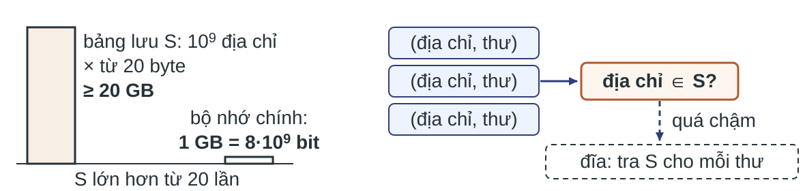
Lấy mẫu $1/20$ của $S$: địa chỉ vắng trong mẫu vẫn có thể thuộc $S$.
Mọi thư từ địa chỉ ngoài mẫu phải tra đĩa.
MMDS §4.3, tr.139: lọc theo thuộc tính của bộ thì dễ, theo một tập không vừa bộ nhớ chính thì khó. Theo §4.3.1, $S$ gồm $10^9$ địa chỉ được tin là không gửi thư rác, mỗi địa chỉ từ 20 byte, bộ nhớ chính 1 GB. Cách hiển nhiên là bảng lưu $S$ (slide MMDS Streams 2 tr.4), cần từ 20 GB. Tra đĩa mỗi thư trái yêu cầu xử lý trong bộ nhớ chính (§4.1.4, tr.135). 1 GB chứa nhiều nhất $1/20$ số byte của $S$, chưa kể phần phụ của bảng, nên một mẫu của $S$ vừa bộ nhớ có nhiều nhất $1/20$ số địa chỉ. Khi địa chỉ có trong mẫu, chắc chắn nó thuộc $S$; khi vắng, nó vẫn có thể thuộc phần còn lại. Do đó mọi thư từ địa chỉ ngoài $S$ và khoảng $19/20$ thư hợp lệ vẫn phải tra đĩa.
Lỗi một phía của bộ lọc 1 GB cho $10^9$ địa chỉ: 8 bit mỗi địa chỉ; một địa chỉ thường dài từ 160 bit.
Nhu cầu: “chắc chắn không thuộc” luôn đúng, để không chặn thư nào từ $S$.
Mẫu $1/20$ của $S$ Bộ lọc cần “thuộc” / “có thể thuộc” luôn đúng có thể sai với địa chỉ ngoài $S$ “không thuộc” không chắc, phải tra đĩa luôn đúng
Bộ lọc chỉ sai ở hàng trên, gọi là lỗi một phía (one-sided error).
Tám bit là $8\cdot10^9$ bit chia cho $10^9$ địa chỉ; 20 byte là 160 bit. Với 8 bit mỗi địa chỉ, cấu trúc không lưu được các địa chỉ, nên câu trả lời có thể sai. Chặn nhầm thư hợp lệ không chấp nhận được; cho qua một thư ngoài $S$ thì thư rác vào hộp thư hoặc tốn một lần tra đĩa (MMDS §4.3.1, tr.139). Trong bảng, mẫu $1/20$ chắc chắn ở hàng trên, bộ lọc chắc chắn ở hàng dưới. “Chắc chắn không thuộc” luôn đúng khi bốn điều kiện về trạng thái được giữ (Định lý 08.25). Mạch tính xác suất một địa chỉ ngoài $S$ cố định bị nhận nhầm, theo số bit mỗi địa chỉ và số hàm băm.
Ý tưởng Bloom filter Tương tự lấy mẫu theo khóa, hàm băm thay cho bảng lưu khóa.
Khác ở chỗ mọi khóa của $S$ đặt bit 1 trước khi dòng đến.
Nhận xét. Nếu một bit tại vị trí băm của $y$ bằng 0 thì $y\notin S$.
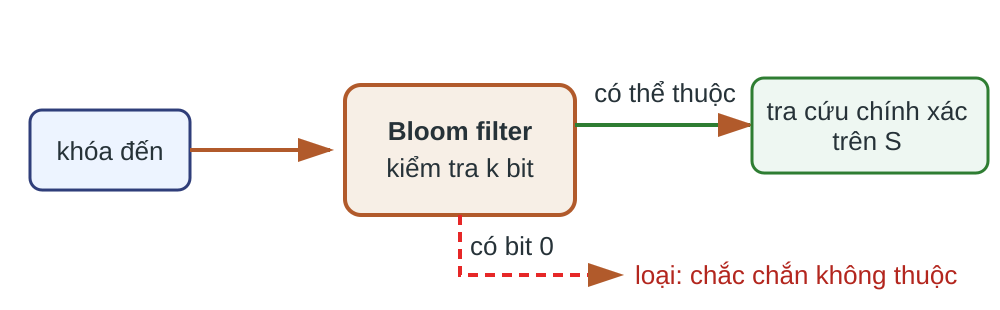
Với một hàm băm và 8 bit mỗi địa chỉ, địa chỉ ngoài $S$ qua bộ lọc với xác suất chưa đến $1/8$.
MMDS §4.3.1, tr.139 dùng một hàm băm vào $8\cdot10^9$ bit: mỗi địa chỉ của $S$ đặt bit của nó thành 1. Khi thư đến, nếu bit của địa chỉ bằng 0 thì địa chỉ chắc chắn không thuộc $S$, vì mọi khóa của $S$ đã đặt bit của mình. Bit bằng 1 chỉ cho biết có thể thuộc, vì nhiều địa chỉ có thể băm vào cùng một bit. Có $10^9$ lần đặt bit trên $8\cdot10^9$ bit, nên hơi ít hơn $1/8$ số bit bằng 1, vì hai địa chỉ có thể trùng bit; Ví dụ 4.3, tr.141 cho $1-e^{-1/8}\approx0{,}1175$. Chỉ khóa qua bộ lọc mới cần tra $S$ trên đĩa. Bloom filter dùng $k$ hàm băm thay vì một để giảm số lần nhận nhầm. Hình vẽ lại cơ chế của slide MMDS Streams 2 tr.6–7.
Ví dụ: Bloom filter 11 bit, thêm ba khóa Tính mảng 11 bit sau khi thêm $S=\{25,159,585\}$ với $k=2$ hàm băm.
$h_1(v)$: ghép các bit ở vị trí lẻ của $v$ (đếm từ phải, từ 1), lấy modulo 11.
$h_2(v)$: như $h_1$, với các bit ở vị trí chẵn.
Ví dụ. $159=10011111_2$: bit lẻ $0111_2=7$, bit chẵn $1011_2=11\equiv0$.
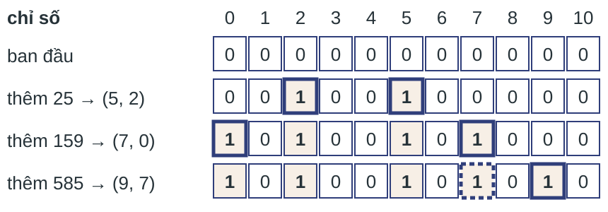
Thêm 585 đặt lại bit 7 đã bằng 1.
Dữ kiện và hàm băm lấy từ slide của Jeffrey D. Ullman (CS246, 2017, tr.5–8). Vị trí bit đếm từ phải, bắt đầu từ 1; mảng hiển thị chỉ số 0 đến 10 từ trái sang phải. Ba khóa: $25=11001_2$ cho $(5,2)$; $159=10011111_2$ cho $(7,0)$; $585=1001001001_2$ cho bit lẻ $01001_2=9$ và bit chẵn $10010_2=18\equiv7$. Mảng sau từng khóa khớp slide tr.6 (Ví dụ 08.11). Sau ba khóa, mảng có 5 bit bằng 1: $0,2,5,7,9$.
Ví dụ: Bloom filter 11 bit, kiểm tra hai khóa $h_1$, $h_2$ lần lượt ghép các bit ở vị trí lẻ, chẵn của khóa (đếm từ phải, từ 1), rồi lấy modulo 11.
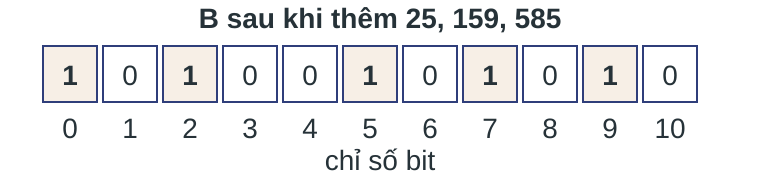
Câu hỏi: với $118=1110110_2$ và $29=11101_2$, tính $(h_1,h_2)$; bộ lọc trả lời gì cho mỗi khóa?
Gợi ý: viết vị trí bit từ phải sang trái, bắt đầu từ 1; ghép các bit ở vị trí lẻ theo thứ tự từ trái sang phải thành một số nhị phân, rồi lấy modulo 11; làm tương tự với vị trí chẵn. Sau đó đọc hai bit tương ứng trên mảng: gặp một bit 0 thì trả “chắc chắn không thuộc”. Mảng là kết quả thêm 25, 159, 585 với cùng hai hàm băm. Khóa 118 lấy từ slide Ullman tr.8.
Ví dụ: Bloom filter 11 bit, kiểm tra hai khóa Lời giải: 118 bị loại ngay ở bit 3; 29 chưa được thêm nhưng vẫn qua bộ lọc, một trường hợp nhận nhầm.
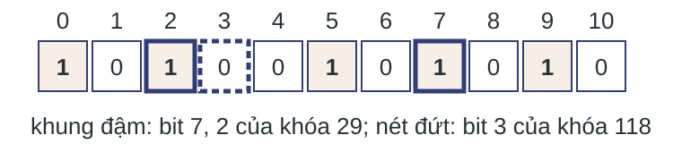
Khóa Nhị phân $(h_1,h_2)$ Bit Trả lời 118 $1110110_2$ (3, 5) 0 (dừng) chắc chắn không thuộc 29 $11101_2$ (7, 2) 1, 1 có thể thuộc
Khóa 118 lấy từ slide Ullman tr.8: $118=1110110_2$, bit lẻ $1110_2=14\equiv3$, bit chẵn $101_2=5$; bit 3 bằng 0 nên phép kiểm tra dừng ngay và 118 chắc chắn không thuộc, dù bit 5 bằng 1. Ví dụ 08.12. Với cùng hàm băm, $29=11101_2$, bit lẻ $111_2=7$, bit chẵn $10_2=2$; bit 7 do 159 và 585 đặt, bit 2 do 25 đặt; không cần khóa nào của $S$ có cả hai vị trí 7 và 2, nên 29 qua bộ lọc dù không thuộc $\{25,159,585\}$. Ứng dụng phải tra $S$ để phát hiện trường hợp này.
Đặc tả Bloom filter Đầu vào: tập $S$ gồm $m$ khóa; mảng $n$ bit $B$; hàm băm $h_1,\ldots,h_k$ vào $\{0,\ldots,n-1\}$.
Đầu ra: mảng $B$ đã xây; với khóa $y$, “chắc chắn không thuộc” hoặc “có thể thuộc”.
Định nghĩa. Hai ô lỗi gọi là âm giả (false negative) và dương giả (false positive).
“chắc chắn không thuộc” “có thể thuộc” $y\in S$ âm giả đúng $y\notin S$ đúng dương giả, như khóa 29
Bloom filter trả lời câu hỏi thành viên một phía: câu trả lời “chắc chắn không thuộc” luôn đúng, còn câu trả lời “có thể thuộc” cần tra $S$ khi quyết định không được sai. Định nghĩa 08.22. Trong lọc thư, dương giả, tức một lần nhận nhầm, là lỗi chấp nhận được: một số thư rác lọt qua bước lọc và bị chặn ở bước tra chính xác. Âm giả là lỗi không chấp nhận được vì thư hợp lệ bị chặn; Định lý 08.25 loại trừ lỗi này dưới bốn điều kiện về trạng thái. “Dương” chỉ câu trả lời “có thể thuộc”; dương giả là khóa ngoài $S$ được cho qua, không phải khóa hợp lệ bị loại. Ký hiệu: $n$ là số bit, $m=|S|$, $k$ là số hàm băm; trong ví dụ 11 bit, $n=11$, $k=2$, $m=3$. Nguồn: MMDS §4.3.2–4.3.3.
Thuật toán: xây Bloom filter Đầu vào: $S$, $n$, $h_1,\ldots,h_k$. Đầu ra: mảng $B$.
XÂY-BLOOM(S; n, h₁,…,hₖ)
B[0…n−1] ← 0
với mỗi khóa v trong S:
với i = 1,…,k: B[hᵢ(v)] ← 1
trả B
Phép duy nhất là đặt bit thành 1; 159 và 585 cùng đặt bit 7, bit đó vẫn là 1.
Chi phí: $km$ lần băm và đặt bit; bộ nhớ $n$ bit.
Thuật toán 08.23. Mọi $h_i$ có miền $\{0,\ldots,n-1\}$ và được giữ nguyên giữa xây và truy vấn. Mảng chỉ đổi bit từ 0 sang 1, không bao giờ ngược lại; tính chất này là cơ sở của Định lý 08.25. $m$ là số khóa phân biệt; thêm lại một khóa đã có không đổi mảng. Nguồn: MMDS §4.3.2, tr.140; slide Streams 2 tr.12.
Thuật toán: kiểm tra thành viên Đầu vào: $y$, $B$, $h_1,\ldots,h_k$. Đầu ra: “chắc chắn không thuộc” hoặc “có thể thuộc”.
KIỂM-TRA-BLOOM(y; B, h₁,…,hₖ)
với i = 1,…,k:
nếu B[hᵢ(y)] = 0: trả “chắc chắn không thuộc”
trả “có thể thuộc”
Phép quyết định: gặp một bit 0 thì dừng và loại $y$.
Trường hợp xấu nhất: $k$ lần băm và $k$ lần đọc bit, khi $y$ qua bộ lọc.
Ví dụ. 118 dừng ở bit 3; 29 đọc cả bit 7 và bit 2.
Thuật toán 08.24. Khóa bị loại dừng ở bit 0 đầu tiên, như 118 dừng sau một lần băm, nên bit 5 của nó không được đọc. Khóa thuộc $S$ và khóa dương giả luôn đọc đủ $k$ bit. Mảng chỉ đổi bit từ 0 sang 1, không bao giờ ngược lại; tính chất này là cơ sở của định lý không có âm giả. Nguồn: MMDS §4.3.2, tr.140.
Tính đúng: không có âm giả Giả thiết: không xóa bit; cùng hàm băm, cùng mảng; hàm tất định; ghi xong trước truy vấn.
Định lý. Nếu $y\in S$ thì truy vấn $y$ trả “có thể thuộc” (Định lý 08.25).
Chứng minh. Khi xây, $B[h_i(y)]\leftarrow1$ với mọi $i$; không bit nào về 0, nên vòng kiểm tra chỉ đọc bit 1.
Ví dụ. Xóa 585 bằng cách đặt bit 9, 7 về 0: 159 gặp $B[7]=0$, thành âm giả.
Bốn điều kiện về trạng thái là giả thiết của định lý, và mỗi điều kiện bị bỏ đều có phản ví dụ. Điều kiện 1: ví dụ trên trang; bit 7 do cả 159 và 585 đặt, nên xóa 585 làm mảng thành $10100100000$ và 159 bị loại. Điều kiện 2: truy vấn dùng $(h_1(v)+1)\bmod 11$ thay cho $h_1$ thì khóa 25 đọc bit 6, bằng 0 trên mảng $10100101010$, và bị loại. Điều kiện 3: hàm có thành phần ngẫu nhiên ở mỗi lần gọi có thể trả lúc truy vấn một vị trí khác lúc xây. Điều kiện 4: truy vấn 159 khi mới ghi $B[7]$ cho 159 mà chưa ghi $B[0]$ đọc mảng tạm $00100101000$, gặp $B[0]=0$ và bị loại. Định lý không dùng xác suất. Chiều ngược không đúng, như khóa 29; khóa ngoài $S$ được xét bằng xác suất dương giả. Nguồn: MMDS §4.3.2, tr.140.
Xác suất một bit bằng 1 Mô hình: $km$ lần băm, mỗi lần chọn đều một trong $n$ bit, độc lập.
Trực quan. Ném $km$ phi tiêu vào $n$ bia; một bit bằng 0 khi bia của nó không trúng.
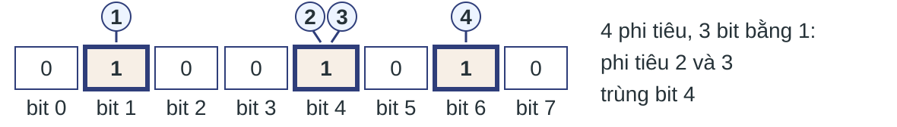
Bổ đề. Với mọi bit $c$, $\Pr[B[c]=0]=(1-1/n)^{km}\approx e^{-km/n}$.
Đặt $q=1-(1-1/n)^{km}$, xác suất một bit bằng 1; số bit 1 $X$ có $\mathbb E[X]=nq$.
Bổ đề 08.26. MMDS §4.3.3, tr.140 dùng mô hình phi tiêu: mỗi phép băm như một phi tiêu rơi đều vào $n$ bia, độc lập với các phi tiêu khác. Một bia không trúng một phi tiêu với xác suất $1-1/n$, không trúng cả $km$ phi tiêu với xác suất $(1-1/n)^{km}$. Viết $(1-1/n)^{km}=((1-1/n)^n)^{km/n}$ và dùng $(1-1/n)^n\approx e^{-1}$ được $e^{-km/n}$. Ví dụ 08.13: 8 bia, 4 phi tiêu, xác suất một bia trống $(7/8)^4\approx0{,}586$; số bit 1 kỳ vọng $8(1-(7/8)^4)\approx3{,}31<4$, vì phi tiêu có thể trùng bia như kết cục trong hình. Theo tuyến tính kỳ vọng, $q$ là tỷ lệ bit 1 kỳ vọng. Các bit không độc lập, nhưng bổ đề không cần điều đó.
Xác suất dương giả Khóa $y\notin S$ cố định qua bộ lọc khi cả $k$ bit $B[h_i(y)]$ bằng 1.
Mệnh đề. Với băm đều, độc lập: $p_{FP}=\mathbb E[(X/n)^k]$ và $p(k)\le q^k\le p_{FP}$, trong đó
$q^k=\left[1-\left(1-\dfrac1n\right)^{km}\right]^k,\qquad p(k)=\left(1-e^{-km/n}\right)^k.$
$p(k)\le q^k$ từ $1-1/n\le e^{-1/n}$; $q^k\le p_{FP}$ từ bất đẳng thức Jensen cho hàm lồi $z^k$.
Ví dụ. $n/m=8$: $p(1)\approx0{,}1175$; $p(2)=(1-e^{-1/4})^2\approx0{,}0489$.
Giả thiết: với $y\notin S$ cố định, các vị trí $h_1(y),\ldots,h_k(y)$ đều, độc lập với nhau và với mảng. Khi biết mảng có $X$ bit 1, mỗi vị trí rơi vào bit 1 với xác suất $X/n$, nên $y$ qua bộ lọc với xác suất đúng $(X/n)^k$, kể cả khi hai vị trí trùng nhau. Lấy kỳ vọng theo mảng được $p_{FP}=\mathbb E[(X/n)^k]$. Thay bằng $(\mathbb E X/n)^k=q^k$ là xấp xỉ thứ nhất; vì $z\mapsto z^k$ lồi, bất đẳng thức Jensen cho $q^k\le p_{FP}$, bằng nhau khi $k=1$. Từ $1-1/n\le e^{-1/n}$ được $p(k)\le q^k$; khi $n$ lớn, ba đại lượng gần nhau. Với $n/m=8$, $k=1$, $q$ chính xác là $0{,}1175031$, khớp dạng mũ tới sáu chữ số. Mệnh đề 08.27; dạng mũ là công thức định cỡ của MMDS tr.141. Trên mảng 11 bit ($n=11$, $k=2$, $m=3$), ba mức còn cách nhau: $p(2)\approx0{,}1768\le q^2\approx0{,}1897\le p_{FP}\approx0{,}1951$ (Ví dụ 08.15).
Ảnh hưởng của số hàm băm Tăng $k$ giúp: khóa ngoài $S$ phải qua thêm một phép thử.
Tăng $k$ hại: thêm $m$ lần đặt bit, $q$ tăng.
Với $n/m=8$: $p(1)\approx0{,}118$, $p(6)\approx0{,}022$, $p(10)\approx0{,}034$.
Câu hỏi: với $n,m$ cố định, $p(k)=(1-e^{-km/n})^k$ tiến về đâu khi $k\to\infty$? Giải thích bằng $q$.
Lời giải: $p(k)\to1$, vì $e^{-km/n}\to0$ nên $q\to1$: gần như mọi bit bằng 1 và mọi khóa đều qua bộ lọc. Hai lực ngược chiều: mỗi hàm băm thêm một phép thử mà khóa ngoài $S$ phải vượt, nhưng cũng thêm $m$ phi tiêu làm mảng đầy hơn. Với $k$ nhỏ, lực thứ nhất thắng; với $k$ lớn, lực thứ hai thắng. Các giá trị $p(1)=0{,}1175$, $p(6)=0{,}0216$, $p(10)=0{,}0342$ tính với $n/m=8$. Nguồn: slide MMDS Streams 2 tr.12–14.
Số hàm băm tối ưu Định lý. Với $n,m$ cố định, $p(k)=(1-e^{-km/n})^k$ trên $k>0$ nhỏ nhất tại $k^*=(n/m)\ln2$ (Định lý 08.28).
Ý nghĩa: tại $k^*$, $e^{-k^*m/n}=1/2$: khoảng một nửa số bit bằng 1, và $p(k^*)=2^{-k^*}$.
Với $k$ nguyên, so $p$ tại $\max(1,\lfloor k^*\rfloor)$ và $\lceil k^*\rceil$.
Chứng minh. Với $\theta=e^{-km/n}$, $(\ln p)'$ cùng dấu với $\phi(\theta)=(1-\theta)\ln(1-\theta)-\theta\ln\theta$: âm khi $k<k^*$ ($\theta>1/2$), dương khi $k>k^*$; nên $p$ giảm trên $(0,k^*]$, tăng trên $[k^*,\infty)$.
Giả thiết: mô hình phi tiêu và dạng mũ $p(k)$; $k$ xét như biến thực. Đặt $\rho=m/n$, $z=k\rho$ và $\theta=e^{-z}$, xác suất một bit bằng 0; $\ln p=k\ln(1-\theta)$ có đạo hàm theo $k$ bằng $\ln(1-e^{-z})+\frac{z}{e^{z}-1}$, bằng 0 khi $z=\ln2$, tức $\theta=1/2$. Kết luận cực tiểu toàn cục cần thêm bước xét dấu: $\phi(\theta)=(1-\theta)\ln(1-\theta)-\theta\ln\theta$ dương trên $(0,1/2)$ và âm trên $(1/2,1)$, nên đạo hàm âm khi $z<\ln2$ và dương khi $z>\ln2$. Quy tắc số nguyên là Hệ quả 08.29. Tại $k^*$, xác suất một bit bằng 0 là $e^{-\ln2}=1/2$, nên $q=1/2$ và $p=2^{-k^*}$. Ở mảng 11 bit ($n=11$, $m=3$), $k^*=(11/3)\ln2\approx2{,}54$; với $k=2$ gần $k^*$, mảng cuối có 5 trong 11 bit bằng 1, gần một nửa. Nguồn: MMDS Bài tập 4.3.3, tr.142.
Ví dụ: tám bit mỗi khóa Tính $p(5)$, $p(6)$ và chọn $k$: $n=8\cdot10^9$ bit, $m=10^9$ địa chỉ, $n/m=8$.
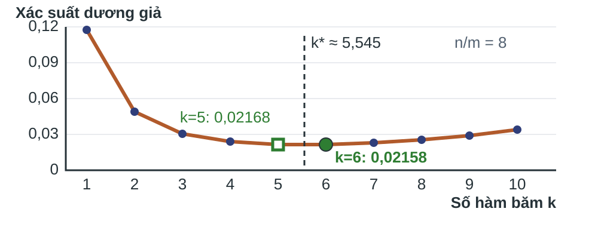
$p(5)=(1-e^{-5/8})^5\approx0{,}0217,\qquad p(6)=(1-e^{-6/8})^6\approx0{,}0216$
$k^*=8\ln2\approx5{,}545$: chọn $k=6$; giá trị liên tục nhỏ nhất là $2^{-5{,}545}\approx0{,}0214$.
Tình huống lọc thư: $10^9$ địa chỉ và 1 GB bộ nhớ. Đường cong vẽ $p(k)$ với $n/m=8$, $k$ từ 1 đến 10; vạch đứng đánh dấu $k^*=8\ln2\approx5{,}545$. Hai số nguyên kề là 5 và 6: $p(5)=0{,}021679$, $p(6)=0{,}021577$, nên chọn $k=6$. Ví dụ 08.16; quy tắc so hai số nguyên kề là Hệ quả 08.29. Số $0{,}0216$ là xác suất cho một địa chỉ ngoài $S$ cố định: trong $10^6$ thư từ địa chỉ ngoài $S$, kỳ vọng khoảng $21\,600$ thư đi tới bước tra đĩa (Nhận xét 08.30). Đường cong theo slide CS246 ngày 26/02/2026, tr.32–33.
Chi phí: Bloom filter Mô hình: đếm phép băm và lần truy cập bit; bộ nhớ đếm bằng bit.
Thao tác Phép băm Truy cập bit xây $km$ $km$ lần ghi kiểm tra, xấu nhất $k$ $k$ lần đọc bộ nhớ — $n$ bit
Câu hỏi: số địa chỉ tăng lên $2\cdot10^9$, giữ $8\cdot10^9$ bit và $k=6$.
Tính $p(6)$; số hàm băm nguyên nào tốt hơn?
Lời giải (Bài tập 08.5): $n/m=4$, $p(6)=(1-e^{-6/4})^6\approx0{,}2198$; $k^*=4\ln2\approx2{,}77$, $p(2)\approx0{,}1548$, $p(3)\approx0{,}1469$, nên chọn $k=3$. Xây tốn $km$ phép băm và lần ghi bit; kiểm tra tốn tối đa $k$ phép băm và $k$ lần đọc, dừng sớm khi gặp bit 0. Bloom filter có ba giới hạn. Nó không liệt kê được khóa, vì mảng chỉ ghi bit. Nó không xóa trực tiếp được một khóa, vì một bit có thể do nhiều khóa đặt và đặt bit về 0 gây âm giả. Thêm khóa mà giữ $n$ làm $p(k)$ tăng, như câu hỏi cho thấy. Đổi $k$ cũng phải xây lại mảng, vì các bit đã đặt theo bộ hàm cũ. Bộ nhớ $n$ bit không phụ thuộc độ dài địa chỉ. Nguồn: MMDS §4.3.2–4.3.3.
7. Bài tập vận dụngMuốn chọn khóa, chọn mẫu bằng hồ chứa và định cỡ Bloom filter, phải áp dụng đặc tả và công thức.
Chọn khóa · Chọn một từ · Ba và bốn hàm băm · Chia mảng bit · Số hàm băm tối ưu
Tổng kết đã đặt kết quả, giả thiết và chi phí của ba cấu trúc cạnh nhau. Năm bài: Bài tập 08.13 (MMDS 4.2.1, tr.138) chọn khóa theo đơn vị thống kê; Bài tập 08.7 (Blum, Hopcroft, Kannan, Bài 6.2, tr.204) chọn một từ bằng hồ chứa; Bài tập 08.10 (MMDS 4.3.1, tr.141) tính xác suất dương giả với ba và bốn hàm băm; Bài tập 08.11 (MMDS 4.3.2, tr.141) so mảng chia với mảng chung; Bài tập 08.12 (MMDS 4.3.3, tr.142) tìm số hàm băm tối ưu. Ba bài đầu là vận dụng trực tiếp; hai bài sau đòi chứng minh, và MMDS đánh dấu 4.3.3 là bài khó.
Bài tập: chọn khóa lấy mẫu Grades(university, courseID, studentID, grade): mã trường duy nhất; mã học phần, mã sinh viên chỉ duy nhất trong một trường.
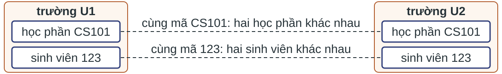
Câu hỏi: với mẫu $1/20$ của dòng, chọn thuộc tính khóa để ước lượng:
số sinh viên trung bình của một học phần, theo từng trường; tỷ lệ sinh viên có điểm trung bình từ 3,5; tỷ lệ học phần có ít nhất nửa số sinh viên đạt “A”. Nguồn: MMDS, Bài tập 4.2.1, §4.2.5, tr.138.
Bài tập 08.13. Năng lực kiểm: xác định đơn vị mà thống kê gộp các bộ và chọn thuộc tính nhận diện duy nhất đơn vị đó (mục tiêu 1). Gợi ý: với mỗi câu, hỏi thống kê gộp các bộ theo đơn vị nào. Mẫu $1/20$ lấy theo giá trị băm của khóa, nên mọi bộ cùng khóa cùng vào hoặc cùng ra. Hình minh họa giả thiết của đề: ở hai trường U1 và U2, cùng mã CS101 là hai học phần khác nhau, cùng mã 123 là hai sinh viên khác nhau. Hướng dẫn chấm theo bước: nêu đơn vị của từng câu; chọn khóa nhận diện đơn vị đó; giải thích vì sao cả ba khóa có university.
Bài tập: chọn khóa lấy mẫu Lời giải: xác định đơn vị mà thống kê gộp, rồi lấy khóa nhận diện đơn vị đó.
đơn vị học phần: khóa (university, courseID); đơn vị sinh viên: khóa (university, studentID); đơn vị học phần: khóa (university, courseID). Mã sinh viên 123 ở hai trường có thể là hai người, nên khóa luôn có university.
(a) Đại lượng là trung bình trên các học phần, mỗi học phần một số sinh viên, không phải tỷ lệ tính trên bản ghi điểm. Với khóa (university, courseID), mọi bộ của một học phần cùng vào mẫu hoặc cùng bị bỏ, nên số sinh viên của học phần được giữ đếm đúng, và mỗi trường còn, theo kỳ vọng, khoảng $1/20$ số học phần. Mẫu từng bản ghi chỉ giữ khoảng $1/20$ số sinh viên của mỗi học phần, nên số đếm nhỏ đi khoảng 20 lần. (b) Điểm trung bình của một sinh viên cần mọi bộ của sinh viên đó. (c) Tỷ lệ đạt A của một học phần cần mọi bộ của học phần. Nếu khóa chỉ là studentID, hai sinh viên khác trường cùng mã 123 bị gộp thành một người. Lời giải theo Bài tập 08.13. Tiêu chí đối chiếu: khóa đúng đơn vị và có university ở cả ba ý.
Bài tập: chọn một từ theo số lần xuất hiện Một cuốn sách rất lớn được đọc một lượt, từ đầu đến cuối.
Câu hỏi: xây dựng cách chọn một từ, với xác suất tỷ lệ với số lần từ đó xuất hiện.
Nêu bộ nhớ cần dùng.
Nguồn: Blum, Hopcroft, Kannan, Foundations of Data Science , Bài 6.2, §6.6, tr.204.
Bài tập 08.7. Năng lực kiểm: nhận ra bài toán là lấy mẫu hồ chứa với $s=1$ và dùng Định lý 08.17 để tính xác suất (mục tiêu 2). Gợi ý: coi mỗi lần xuất hiện của một từ là một phần tử của dòng. Hướng dẫn chấm theo bước: mô hình hóa sách thành dòng các lần xuất hiện; nêu thuật toán hồ chứa với $s=1$; tính xác suất chọn từ $w$ bằng tổng xác suất các vị trí của nó; nêu bộ nhớ; kiểm trên một sách nhỏ.
Bài tập: chọn một từ theo số lần xuất hiện Lời giải: coi mỗi lần xuất hiện của một từ là một phần tử $x_i$; chạy hồ chứa với $s=1$.
Định lý 08.17, $s=1$: mỗi vị trí $i\le r$ nằm trong hồ với xác suất $1/r$.
Từ $w$ có $f_w$ vị trí, các biến cố rời nhau: $\Pr[\text{chọn }w]=f_w/r$.
Bộ nhớ: một từ trong hồ và bộ đếm $r$ ($\lceil\log_2(r+1)\rceil$ bit).
Sách “a b a”, $r=3$: $\Pr[\text{chọn a}]=\frac12\cdot\frac23+\frac13=\frac23=f_{\mathrm a}/r$.
Lời giải theo Bài tập 08.7. Kiểm tra với sách “a b a”: phần tử ở vị trí 1 còn trong hồ khi không bị thay ở bước 2 và bước 3, với xác suất $\frac12\cdot\frac23=\frac13$; vị trí 3 vào hồ với xác suất $\frac13$. Vậy a được chọn với xác suất $\frac23$ và b với xác suất $\frac13$, đúng tỷ lệ số lần xuất hiện 2 : 1. Thuật toán không cần biết trước độ dài sách và không giữ bảng đếm theo từ. Tiêu chí đối chiếu: dòng là các lần xuất hiện, không phải các từ khác nhau; dùng $s=1$; xác suất $f_w/r$ có lập luận rời nhau; bộ nhớ một từ cộng bộ đếm.
Bài tập: dương giả với ba và bốn hàm băm Mảng $n=8\cdot10^9$ bit, tập $S$ gồm $m=10^9$ khóa (tình huống lọc thư).
Câu hỏi: tính xác suất dương giả khi dùng ba hàm băm, và khi dùng bốn hàm băm.
Nguồn: MMDS, Bài tập 4.3.1, §4.3.4, tr.141.
Bài tập 08.10. Năng lực kiểm: thay số vào dạng mũ $p(k)$ và đọc kết quả theo $k^*$ (mục tiêu 3). Gợi ý: dùng $p(k)=(1-e^{-km/n})^k$ với $km/n=k/8$. Đề giữ nguyên dữ kiện của MMDS Bài tập 4.3.1: tình huống lọc thư với 8 tỷ bit và 1 tỷ địa chỉ. Trước khi tính, có thể dự đoán: $k^*=8\ln2\approx5{,}5$ và $p$ giảm trên $(0,k^*]$, nên bốn hàm băm, gần $k^*$ hơn, cho số nhỏ hơn. Sách gọi đại lượng này là false-positive rate. Hướng dẫn chấm theo bước: thay $km/n=k/8$; tính $p(3)$, $p(4)$; nêu đây là dạng mũ, một cận dưới của $p_{FP}$; so hai số với vị trí của $k^*$.
Bài tập: dương giả với ba và bốn hàm băm Lời giải: dùng $p(k)=(1-e^{-km/n})^k$ với $km/n=k/8$.
Ba hàm băm: ${p(3)=(1-e^{-3/8})^3\approx0{,}0306}$.
Bốn hàm băm: ${p(4)=(1-e^{-4/8})^4\approx0{,}0240}$.
Bốn hàm băm cho xác suất nhỏ hơn vì $3<4<k^*\approx5{,}55$; hai số là dạng mũ, một cận dưới của $p_{FP}$.
Với $n/m=8$, $k^*=8\ln2\approx5{,}545$; $p$ giảm trên $(0,k^*]$, nên $p(4)<p(3)$. Lời giải theo Bài tập 08.10. Theo Mệnh đề 08.27, hai số là dạng mũ, một cận dưới của $p_{FP}$ dưới mô hình băm đều, độc lập; với $n=8\cdot10^9$, $q^k$ và $p(k)$ trùng tới chín chữ số có nghĩa. Tiêu chí đối chiếu: thay đúng $km/n$, nêu đây là dạng mũ, cận dưới của xác suất dương giả, làm tròn nhất quán (bốn chữ số có nghĩa: $0{,}03058$ và $0{,}02397$). Không suy ra rằng càng nhiều hàm băm càng tốt: với $k>k^*$, $p$ tăng.
Bài tập: chia mảng bit Có $n$ bit và tập $S$ gồm $m$ khóa.
Thay $k$ hàm băm vào một mảng, chia $n$ bit thành $k$ mảng, băm một lần vào mỗi mảng.
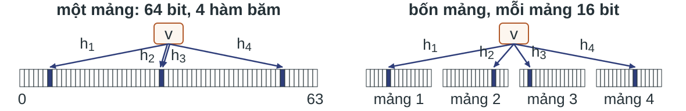
Câu hỏi: theo $n$, $m$, $k$, xác suất dương giả là bao nhiêu? So với $k$ hàm băm vào một mảng chung.
Quy ước: $k$ chia hết $n$; các hàm băm đều, độc lập.
Nguồn: MMDS, Bài tập 4.3.2, §4.3.4, tr.141.
Bài tập 08.11. Năng lực kiểm: dựng mô hình phi tiêu cho mảng con và so hai công thức bằng bất đẳng thức Bernoulli (mục tiêu 3). Hình dựng bài toán với $n=64$, $k=4$: bên trái, bốn hàm băm có thể trúng cùng một bit; bên phải, mỗi hàm chỉ băm vào mảng riêng của nó. Gợi ý: một mảng con có $n/k$ bit và nhận $m$ phi tiêu, mỗi khóa của $S$ một phi tiêu. Hướng dẫn chấm theo bước: xác suất một bit của mảng con bằng 0; tích $k$ phép kiểm độc lập; so với $q^k$; giới hạn khi $n$ lớn.
Bài tập: chia mảng bit Lời giải: mảng con có $n/k$ bit và nhận $m$ phi tiêu; một bit còn 0 với xác suất $(1-k/n)^m$.
$$\begin{aligned}p_{\text{chia}}&=\bigl[1-(1-k/n)^m\bigr]^k,\\ q^k&=\bigl[1-(1-1/n)^{km}\bigr]^k.\end{aligned}$$
Các mảng con độc lập, nên $p_{\text{chia}}$ đúng chính xác; $q^k$ của mảng chung là cận dưới của $\mathbb E[(X/n)^k]$.
Theo bất đẳng thức Bernoulli, $(1-1/n)^k\ge1-k/n$, nên $p_{\text{chia}}\ge q^k$; khi $n$ lớn, cả hai gần ${(1-e^{-km/n})^k}$.
Ví dụ. $n=64$, $m=8$, $k=4$: mảng chia $0{,}0265$; $q^k=0{,}0246$; mảng chung chính xác $0{,}0254$.
Lời giải theo Bài tập 08.11. Với khóa $y\notin S$ cố định, $h_i(y)$ rơi đều trong mảng con thứ $i$, độc lập với các phi tiêu của $S$, nên bit đó bằng 1 với xác suất $1-(1-k/n)^m$; các mảng con dùng hàm băm khác nhau nên $k$ phép kiểm độc lập, và tích là chính xác dưới mô hình. Ở mảng chung, $k$ phép kiểm cùng đọc một mảng có số bit 1 ngẫu nhiên $X$, nên giá trị chính xác là $\mathbb E[(X/n)^k]$, còn $q^k$ là một cận dưới (Mệnh đề 08.27). Bernoulli cho $(1-k/n)^m\le(1-1/n)^{km}$: mảng chia có ít bit 0 hơn. Với $n=8\cdot10^9$, $m=10^9$, $k=4$, hai công thức trùng tới chín chữ số có nghĩa. Tiêu chí đối chiếu: công thức mảng con, tính độc lập giữa các mảng, chiều so sánh, giới hạn khi $n$ lớn.
Bài tập: số hàm băm tối ưu Câu hỏi: với $n$ bit và tập $S$ gồm $m$ khóa, số hàm băm nào làm nhỏ nhất xác suất dương giả?
Dùng dạng $p(k)=(1-e^{-km/n})^k$ với $k$ thực, rồi chọn $k$ nguyên.
Gợi ý: lấy logarit, tính đạo hàm theo $k$, rồi xét dấu đạo hàm ở hai phía điểm dừng.
Nguồn: MMDS, Bài tập 4.3.3, §4.3.4, tr.142.
Bài tập 08.12. Năng lực kiểm: tìm cực tiểu của một hàm một biến bằng đạo hàm và xét dấu (mục tiêu 3). Gợi ý chi tiết: đặt $\rho=m/n$, $z=k\rho$, $\theta=e^{-z}$ và xét $\lambda(k)=\ln p(k)=k\ln(1-\theta)$; $p$ và $\lambda$ cùng tăng, cùng giảm. Đạo hàm bằng 0 chỉ cho điểm dừng; muốn kết luận cực tiểu toàn cục phải xét dấu. Sách đánh dấu bài này là bài khó (hai dấu chấm than). Hướng dẫn chấm theo bước: đạo hàm đúng, điểm dừng, xét dấu hai phía, quy tắc số nguyên.
Bài tập: số hàm băm tối ưu, điểm dừng Lời giải: đặt $\rho=m/n$, $z=k\rho$, $\theta=e^{-z}$ (xác suất một bit bằng 0); ${\lambda=\ln p=k\ln(1-\theta)}$.
$$\begin{aligned}\lambda'(k)&=\ln(1-e^{-k\rho})+\frac{k\rho\,e^{-k\rho}}{1-e^{-k\rho}}\\ &=\ln(1-\theta)+\frac{z\theta}{1-\theta}=\frac{\phi(\theta)}{1-\theta},\\ \phi(\theta)&=(1-\theta)\ln(1-\theta)-\theta\ln\theta.\end{aligned}$$
Bước cuối thay $z=-\ln\theta$; dấu của $\lambda'(k)$ là dấu của $\phi(\theta)$, vì $1-\theta>0$.
$\phi(1/2)=0$: điểm dừng tại $\theta=1/2$, tức $k^*=(\ln2)/\rho=(n/m)\ln2$.
Kết luận cực tiểu toàn cục cần xét dấu $\phi$ ở hai phía của $1/2$.
Lời giải theo Bài tập 08.12, chứng minh Định lý 08.28, Bước 1–2. Đạo hàm của $k\ln(1-e^{-k\rho})$ theo quy tắc tích: $\ln(1-e^{-k\rho})$ cộng $k$ nhân đạo hàm của $\ln(1-e^{-k\rho})$, tức $\frac{\rho e^{-k\rho}}{1-e^{-k\rho}}$. Viết $e^{-k\rho}=\theta$ và $k\rho=z=-\ln\theta$ được $\frac{z\theta}{1-\theta}=-\frac{\theta\ln\theta}{1-\theta}$, rồi quy đồng. Khi $k$ chạy trên $(0,\infty)$, $\theta$ giảm chặt từ 1 về 0, nên mỗi $\theta\in(0,1)$ ứng với đúng một $k$. Tại $\theta=1/2$: $\phi(1/2)=\frac12\ln\frac12-\frac12\ln\frac12=0$. Còn phải chứng minh $\phi$ không có nghiệm nào khác trong $(0,1)$ và xét dấu ở hai phía.
Bài tập: số hàm băm tối ưu, xét dấu $\phi''(\theta)=\frac1{1-\theta}-\frac1\theta<0$ trên $(0,1/2)$: $\phi$ lõm chặt, $\phi(0^+)=\phi(1/2)=0$, nên $\phi>0$ ở giữa.
$\phi(1-\theta)=-\phi(\theta)$, nên $\phi<0$ trên $(1/2,1)$.
$\theta$ giảm chặt theo $k$: $k<k^*\iff\theta>1/2\iff\lambda'(k)<0$; $k>k^*\iff\lambda'(k)>0$.
$p$ giảm rồi tăng, nhỏ nhất tại $k^*$; tại đó $\theta=1/2$ nên $p(k^*)=2^{-k^*}$.
Với $k$ nguyên: so $p$ tại $\lfloor k^*\rfloor$ và $\lceil k^*\rceil$, lấy 1 nếu $k^*<1$; $n/m=8$ cho $p(5)>p(6)$, chọn 6.
Từ $\phi'(\theta)=-\ln(1-\theta)-\ln\theta-2$ được $\phi''(\theta)=\frac1{1-\theta}-\frac1\theta$, âm khi $\theta<1/2$. Đặt $\phi(0)=0$ thì $\phi$ liên tục trên $[0,1/2]$; một hàm lõm chặt bằng 0 ở hai đầu đoạn thì dương ở trong. Đối xứng $\phi(1-\theta)=-\phi(\theta)$ kiểm trực tiếp từ định nghĩa, nên trong $(0,1)$, $\phi$ chỉ bằng 0 tại $\theta=1/2$. Khi $k<k^*$, $\theta>1/2$ nên $\phi<0$, $\lambda'<0$ và $p$ giảm; khi $k>k^*$, $p$ tăng. Vậy $k^*$ là cực tiểu toàn cục duy nhất, và với $k$ nguyên chỉ cần so hai số nguyên kề. Kiểm với $n/m=8$: $k^*=5{,}545$, $p(5)=0{,}02168>p(6)=0{,}02158$. Lời giải theo Bài tập 08.12, dùng chứng minh Định lý 08.28 (Bước 3–5) và Hệ quả 08.29.